a. 参数表示
定义
用方程 y = f ( x ) y=f(x) y = f ( x ) y y y y = f ( x ) y=f(x) y = f ( x ) a a a − a ≤ x ≤ a -a\le x\le a − a ≤ x ≤ a y = a 2 − x 2 y=\sqrt{a^2-x^2} y = a 2 − x 2 y = − a 2 − x 2 y=-\sqrt{a^2-x^2} y = − a 2 − x 2 y y y
较灵活的办法是用方程 ϕ ( x , y ) = 0 \phi(x,y)=0 ϕ ( x , y ) = 0 隐式表示 ，其中 ϕ \phi ϕ a a a ϕ ( x , y ) = x 2 + y 2 − a 2 = 0 \phi(x,y)=x^2+y^2-a^2=0 ϕ ( x , y ) = x 2 + y 2 − a 2 = 0 a x + b y + c = 0 ax+by+c=0 a x + b y + c = 0 a , b , c a,b,c a , b , c a , b a,b a , b b = 0 b=0 b = 0 y y y ( x , y ) (x,y) ( x , y ) x x x y y y ϕ ( x , y ) = 0 \phi(x,y)=0 ϕ ( x , y ) = 0
对曲线最直接也最灵活的描述是参数表示 。我们把两个直角坐标 x , y x,y x , y t t t t t t 参数 。¹ 当 t t t x , y x,y x , y x 2 + y 2 = a 2 x^2+y^2=a^2 x 2 + y 2 = a 2 x = a cos t , y = a sin t x=a\cos t,\ y=a\sin t x = a cos t , y = a sin t t t t
原注 1（第 325 页） “参数”一词用来表示一个辅助变量，所要着重考察的并不是这个变量本身。
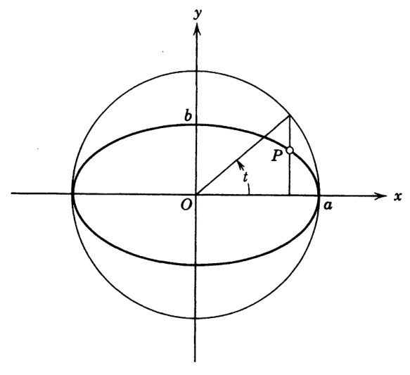
图 4.1 椭圆 x 2 / a 2 + y 2 / b 2 = 1 x^2/a^2+y^2/b^2=1 x 2 / a 2 + y 2 / b 2 = 1 x = a cos t , y = b sin t x=a\cos t,\ y=b\sin t x = a cos t , y = b sin t t t t 离心角 。在椭圆的外接圆上取一点，使它在椭圆上的点 P = ( a cos t , b sin t ) P=(a\cos t,b\sin t) P = ( a cos t , b sin t ) t t t b < a b<a b < a t t t 0 ≤ t < 2 π 0\le t<2\pi 0 ≤ t < 2 π x , y x,y x , y
一般地，曲线 C C C t t t
x = ϕ ( t ) = x ( t ) , y = ψ ( t ) = y ( t ) .
x=\phi(t)=x(t),\qquad y=\psi(t)=y(t).
x = ϕ ( t ) = x ( t ) , y = ψ ( t ) = y ( t ) . 没有混淆之虞时，用较简短的记号 x ( t ) , y ( t ) x(t),y(t) x ( t ) , y ( t ) ϕ , ψ \phi,\psi ϕ , ψ
原注 1（第 326 页） x = ϕ ( t ) x=\phi(t) x = ϕ ( t ) x ( t ) x(t) x ( t ) t t t x x x
把参数区间映到曲线上。曲线的走向
对给定的曲线，必须这样确定 ϕ ( t ) , ψ ( t ) \phi(t),\psi(t) ϕ ( t ) , ψ ( t ) t t t x ( t ) , y ( t ) x(t),y(t) x ( t ) , y ( t ) t t t t t t t t t t t t C C C x = ϕ ( t ) , y = ψ ( t ) x=\phi(t),\ y=\psi(t) x = ϕ ( t ) , y = ψ ( t )
由于 x ( t ) , y ( t ) x(t),y(t) x ( t ) , y ( t ) t t t t t t C C C t 1 < t 2 t_1<t_2 t 1 < t 2 t 1 t_1 t 1 t 2 t_2 t 2
b. 参数变换
参数 t t t C C C
同一条曲线 C C C y = f ( x ) y=f(x) y = f ( x ) x x x t t t x = t , y = f ( t ) x=t,\ y=f(t) x = t , y = f ( t ) x = g ( y ) x=g(y) x = g ( y ) y y y t t t x = g ( t ) , y = t x=g(t),\ y=t x = g ( t ) , y = t
若曲线的极坐标方程为 r = h ( θ ) r=h(\theta) r = h ( θ ) θ \theta θ t t t
x = r cos θ = h ( t ) cos t = ϕ ( t ) , y = r sin θ = h ( t ) sin t = ψ ( t ) .
x=r\cos\theta=h(t)\cos t=\phi(t),\qquad y=r\sin\theta=h(t)\sin t=\psi(t).
x = r cos θ = h ( t ) cos t = ϕ ( t ) , y = r sin θ = h ( t ) sin t = ψ ( t ) . 从曲线 C C C x = ϕ ( t ) , y = ψ ( t ) x=\phi(t),\ y=\psi(t) x = ϕ ( t ) , y = ψ ( t ) τ = χ ( t ) \tau=\chi(t) τ = χ ( t ) C C C t t t τ \tau τ χ \chi χ t = σ ( τ ) t=\sigma(\tau) t = σ ( τ ) C C C
x = ϕ [ σ ( τ ) ] = α ( τ ) , y = ψ [ σ ( τ ) ] = β ( τ ) .
x=\phi[\sigma(\tau)]=\alpha(\tau),\qquad y=\psi[\sigma(\tau)]=\beta(\tau).
x = ϕ [ σ ( τ )] = α ( τ ) , y = ψ [ σ ( τ )] = β ( τ ) . 函数 α ( τ ) , β ( τ ) \alpha(\tau),\beta(\tau) α ( τ ) , β ( τ ) C C C t t t σ \sigma σ τ \tau τ t t t τ \tau τ C C C
例如直线 y = x y=x y = x x = t , y = t x=t,\ y=t x = t , y = t − ∞ < t < ∞ -\infty<t<\infty − ∞ < t < ∞ τ = t 3 \tau=t^3 τ = t 3 x = τ 1 / 3 , y = τ 1 / 3 x=\tau^{1/3},\ y=\tau^{1/3} x = τ 1/3 , y = τ 1/3 x 2 / a 2 + y 2 / b 2 = 1 x^2/a^2+y^2/b^2=1 x 2 / a 2 + y 2 / b 2 = 1 x = a cos t , y = b sin t x=a\cos t,\ y=b\sin t x = a cos t , y = b sin t 0 ≤ t < 2 π 0\le t<2\pi 0 ≤ t < 2 π t = c ζ + d t=c\zeta+d t = c ζ + d c , d c,d c , d c ≠ 0 c\ne0 c = 0 x ( ζ ) = a cos ( c ζ + d ) , y ( ζ ) = b sin ( c ζ + d ) x(\zeta)=a\cos(c\zeta+d),\ y(\zeta)=b\sin(c\zeta+d) x ( ζ ) = a cos ( c ζ + d ) , y ( ζ ) = b sin ( c ζ + d ) c > 0 c>0 c > 0 ζ \zeta ζ − d / c ≤ ζ < ( 2 π − d ) / c -d/c\le\zeta<(2\pi-d)/c − d / c ≤ ζ < ( 2 π − d ) / c c < 0 c<0 c < 0 ( 2 π − d ) / c < ζ ≤ − d / c (2\pi-d)/c<\zeta\le-d/c ( 2 π − d ) / c < ζ ≤ − d / c τ = tan ( t / 2 ) \tau=\tan(t/2) τ = tan ( t /2 )
x = a ( 1 − τ 2 ) 1 + τ 2 , y = 2 b τ 1 + τ 2 .
x=\frac{a(1-\tau^2)}{1+\tau^2},\qquad y=\frac{2b\tau}{1+\tau^2}.
x = 1 + τ 2 a ( 1 − τ 2 ) , y = 1 + τ 2 2 b τ . 当 τ \tau τ S = ( − a , 0 ) S=(-a,0) S = ( − a , 0 )
普通表示中出现的奇性，选取适当的参数之后可以消失。例如，曲线 y = x 2 3 y=\sqrt[3]{x^2} y = 3 x 2 x = t 3 , y = t 2 x=t^3,\ y=t^2 x = t 3 , y = t 2 t t t − ∞ -\infty − ∞ + ∞ +\infty + ∞ x , y x,y x , y
特别地，有时用 y = f ( x ) y=f(x) y = f ( x ) C C C t 0 ≤ t ≤ t 1 t_0\le t\le t_1 t 0 ≤ t ≤ t 1 ϕ , ψ \phi,\psi ϕ , ψ x = ϕ ( t ) x=\phi(t) x = ϕ ( t ) t = γ ( x ) t=\gamma(x) t = γ ( x ) y = ψ [ γ ( x ) ] y=\psi[\gamma(x)] y = ψ [ γ ( x )]
原注 1（第 328 页） 这当然只说了曲线的一个“局部”性质，即只对一个适当小的部分作出断言。通常（例如圆），x x x
c. 沿曲线的运动。以时间为参数。摆线的例子
沿曲线的运动
参数 t t t x , y x,y x , y t t t ( x , y ) (x,y) ( x , y ) ( x ( t ) , y ( t ) ) (x(t),y(t)) ( x ( t ) , y ( t )) C C C
原注 2（第 328 页） 此时改变参数 t t t C C C
摆线与旋轮线
摆线给出了一个例子。一个圆沿直线或另一圆作匀速无滑动的滚动，圆周上一点的轨迹便是一条摆线。最简单的情形是半径为 a a a x x x P P P t = 0 t=0 t = 0 P P P t t t t t t x x x t t t P P P M M M ( a t , a ) (at,a) ( a t , a ) a a a t t t P P P
x = a ( t − sin t ) , y = a ( 1 − cos t ) . (1)
x=a(t-\sin t),\qquad y=a(1-\cos t).\tag{1}
x = a ( t − sin t ) , y = a ( 1 − cos t ) . ( 1 ) 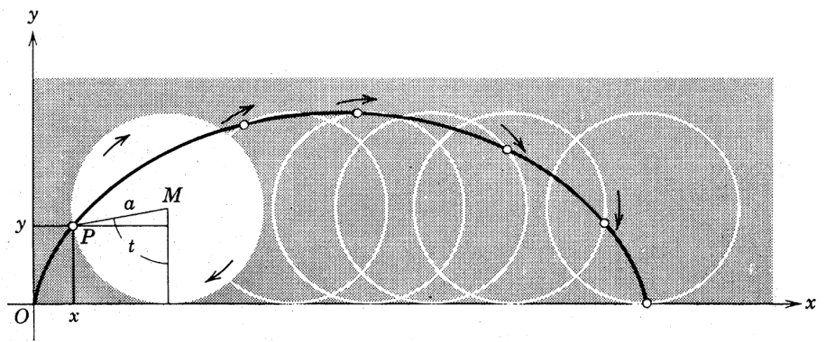
图 4.2 摆线 消去参数 t t t
cos t = a − y a , t = arccos a − y a , sin t = ± 1 − ( a − y ) 2 a 2 ,
\cos t=\frac{a-y}a,\qquad t=\arccos\frac{a-y}a,\qquad \sin t=\pm\sqrt{1-\frac{(a-y)^2}{a^2}},
cos t = a a − y , t = arccos a a − y , sin t = ± 1 − a 2 ( a − y ) 2 , 从而
x = a arccos a − y a ∓ y ( 2 a − y ) . (1a)
x=a\arccos\frac{a-y}a\mp\sqrt{y(2a-y)}.\tag{1a}
x = a arccos a a − y ∓ y ( 2 a − y ) . ( 1a ) 这样就把 x x x y y y
译者注 消去三角参数时，要给反余弦选与所跟踪的弧段相符的角。式 (1) 则可以直接跟踪连续几拱：t t t 2 π 2\pi 2 π 2 π a 2\pi a 2 πa
外摆线
再举外摆线 的例子。半径为 c c c a a a P P P x , y x,y x , y t t t t t t P = ( x ( t ) , y ( t ) ) P=(x(t),y(t)) P = ( x ( t ) , y ( t )) t = 0 t=0 t = 0 ( a , 0 ) (a,0) ( a , 0 ) t t t
x ( t ) = ( a + c ) cos t − c cos ( a + c c t ) , y ( t ) = ( a + c ) sin t − c sin ( a + c c t ) (2)
x(t)=(a+c)\cos t-c\cos\left(\frac{a+c}c t\right),\qquad
y(t)=(a+c)\sin t-c\sin\left(\frac{a+c}c t\right)\tag{2}
x ( t ) = ( a + c ) cos t − c cos ( c a + c t ) , y ( t ) = ( a + c ) sin t − c sin ( c a + c t ) ( 2 ) 给出。当 a = c a=c a = c 心形线 （图 4.4），其参数方程是
x ( t ) = 2 a cos t − a cos ( 2 t ) , y ( t ) = 2 a sin t − a sin ( 2 t ) . (3)
x(t)=2a\cos t-a\cos(2t),\qquad y(t)=2a\sin t-a\sin(2t).\tag{3}
x ( t ) = 2 a cos t − a cos ( 2 t ) , y ( t ) = 2 a sin t − a sin ( 2 t ) . ( 3 ) 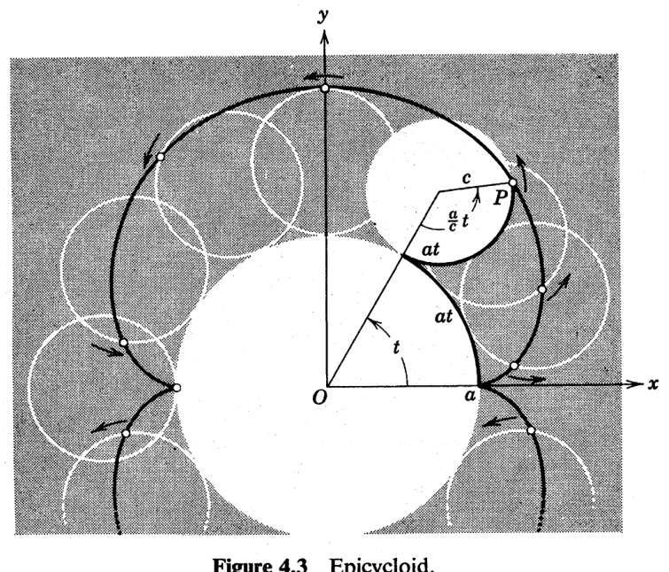
图 4.3 外摆线 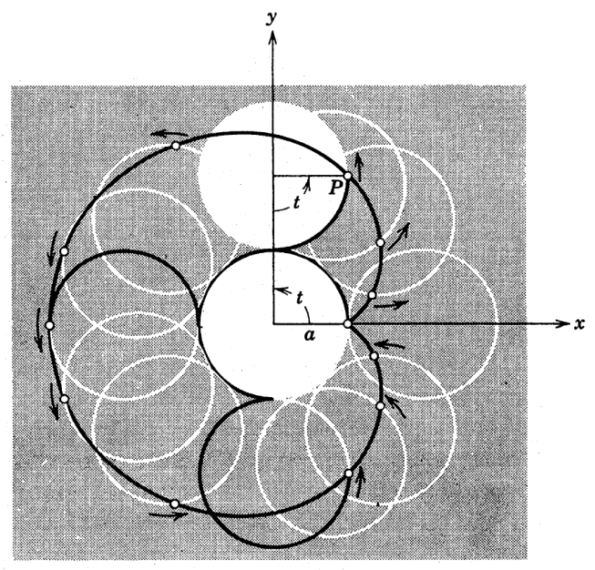
图 4.4 心形线 第三种摆线是一个圆沿另一个定圆的圆周内侧 滚动时，固定在动圆圆周上的一点的轨迹。为求这条内摆线 的参数方程，设定圆半径为 a a a c c c P P P t = 0 t=0 t = 0 ( a , 0 ) (a,0) ( a , 0 ) t t t t t t
x ( t ) = ( a − c ) cos t + c cos ( a − c c t ) , y ( t ) = ( a − c ) sin t − c sin ( a − c c t ) . (4)
x(t)=(a-c)\cos t+c\cos\left(\frac{a-c}c t\right),\qquad
y(t)=(a-c)\sin t-c\sin\left(\frac{a-c}c t\right).\tag{4}
x ( t ) = ( a − c ) cos t + c cos ( c a − c t ) , y ( t ) = ( a − c ) sin t − c sin ( c a − c t ) . ( 4 ) 特别地，若定圆半径是动圆半径的两倍，即 c = 1 2 a c=\tfrac12a c = 2 1 a x ( t ) = a cos t , y ( t ) = 0 x(t)=a\cos t,\ y(t)=0 x ( t ) = a cos t , y ( t ) = 0
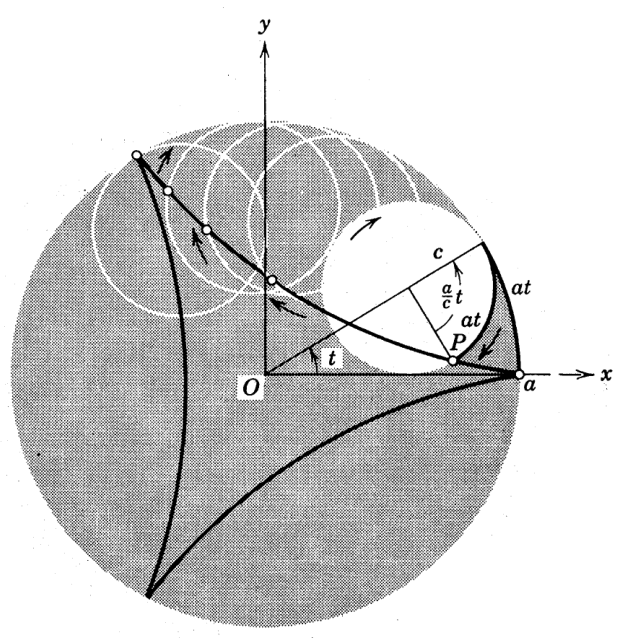
图 4.5 内摆线 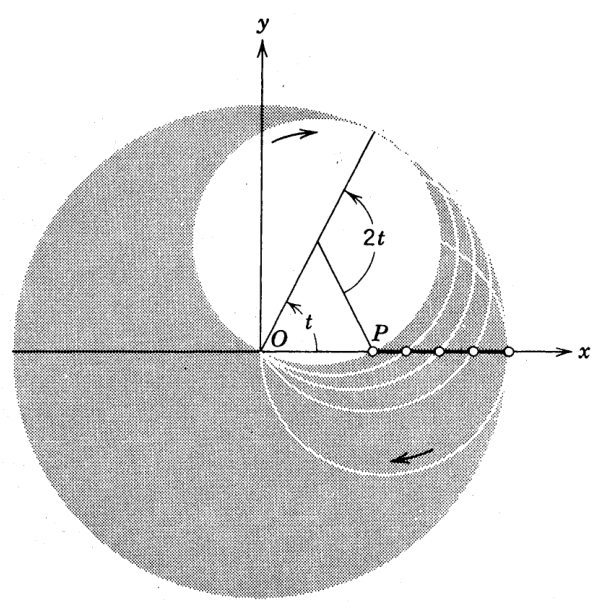
图 4.6 一个圆在半径为它两倍的圆内滚动，轮缘上的点描出直线段 若定圆半径是动圆的三倍，则 c = a / 3 c=a/3 c = a /3
x ( t ) = 2 3 a cos t + 1 3 a cos ( 2 t ) , y ( t ) = 2 3 a sin t − 1 3 a sin ( 2 t ) .
x(t)=\tfrac23a\cos t+\tfrac13a\cos(2t),\qquad
y(t)=\tfrac23a\sin t-\tfrac13a\sin(2t).
x ( t ) = 3 2 a cos t + 3 1 a cos ( 2 t ) , y ( t ) = 3 2 a sin t − 3 1 a sin ( 2 t ) . 初等计算给出 x 2 + y 2 = 5 9 a 2 + 4 9 a 2 cos ( 3 t ) x^2+y^2=\tfrac59a^2+\tfrac49a^2\cos(3t) x 2 + y 2 = 9 5 a 2 + 9 4 a 2 cos ( 3 t )
旋轮线
若考虑与滚动圆固连的任意一点 P P P 旋轮线 （外旋轮线、内旋轮线，见图 4.7）。若一点沿某圆作匀速圆周运动，同时这个圆的圆心本身沿一直线或另一圆作匀速运动，所得轨迹也是这类曲线。托勒密对行星视运动的描述，便以这类曲线为核心。摆线的一些出色性质将在本章后面（第 428 页）讨论。
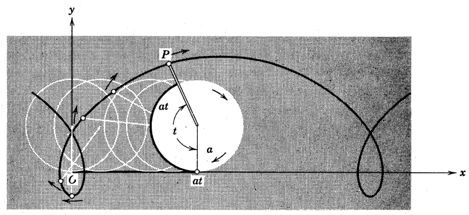
图 4.7 旋轮线 d. 曲线的分类。定向
定义
曲线最显眼的特征，包括它有几个彼此分离的部分或分支，以及有几个环。例如双曲线就由两个不相交的分支组成；曲线 y 2 = ( 4 − x 2 ) ( x 2 − 1 ) y^2=(4-x^2)(x^2-1) y 2 = ( 4 − x 2 ) ( x 2 − 1 ) 连通曲线 。连通曲线可以与自身相交，图 4.7 的旋轮线和第 103 页图 1.53 的“双纽线”就是例子。
一条没有自交的连通曲线称为简单曲线 。在简单曲线中还可以区别闭的与不闭的，前者如圆和椭圆，后者如抛物线和直线段。这里不打算给曲线以严格或完备的分类，只指出与参数表示有关的某些“拓扑”特征。
简单弧
用两个连续函数 x = ϕ ( t ) , y = ψ ( t ) x=\phi(t),\ y=\psi(t) x = ϕ ( t ) , y = ψ ( t ) C C C t t t C C C t t t t t t [ a , b ] [a,b] [ a , b ] ϕ , ψ \phi,\psi ϕ , ψ t t t C C C P P P C C C 简单弧 。例如 0 ≤ t ≤ 1 0\le t\le1 0 ≤ t ≤ 1 x = t , y = t 2 x=t,\ y=t^2 x = t , y = t 2
同一条弧 C C C a ≤ t ≤ b a\le t\le b a ≤ t ≤ b τ = χ ( t ) \tau=\chi(t) τ = χ ( t ) τ \tau τ x , y x,y x , y [ α , β ] [\alpha,\beta] [ α , β ] τ \tau τ τ \tau τ P P P τ = χ ( t ) \tau=\chi(t) τ = χ ( t )
简单弧 C C C x = x ( t ) , y = y ( t ) x=x(t),\ y=y(t) x = x ( t ) , y = y ( t ) C C C t t t P 0 , P 1 P_0,P_1 P 0 , P 1 P 1 P_1 P 1 P 1 P_1 P 1 P 0 P_0 P 0 τ = χ ( t ) \tau=\chi(t) τ = χ ( t ) τ \tau τ τ \tau τ τ \tau τ C C C χ ( t ) \chi(t) χ ( t )
弧的方向或定向
在简单弧上选定一个走向（例如与某种参数 t t t 有向弧 或定向弧 ，这个走向称为弧的正向。只要知道弧的两个端点中哪一个在另一个之后，正向就完全确定了。称在后的端点为终点 ，另一个为起点 。给定有向弧的任一参数表示 x = x ( τ ) , y = y ( τ ) x=x(\tau),\ y=y(\tau) x = x ( τ ) , y = y ( τ ) a ≤ τ ≤ b a\le\tau\le b a ≤ τ ≤ b τ = a \tau=a τ = a τ = b \tau=b τ = b τ \tau τ τ \tau τ
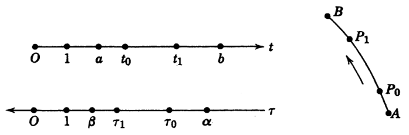
图 4.8 走向与参数表示 简单弧 C C C P 0 , P 1 P_0,P_1 P 0 , P 1 C C C C C C P 1 P_1 P 1 P 0 P_0 P 0 P 0 P_0 P 0 P 1 P_1 P 1 C C C
往往不宜把研究限于简单弧，坚持不同的参数值 t t t x = x ( t ) , y = y ( t ) x=x(t),\ y=y(t) x = x ( t ) , y = y ( t ) P P P t t t
例如曲线 x = t 2 − 1 , y = t 3 − t x=t^2-1,\ y=t^3-t x = t 2 − 1 , y = t 3 − t y 2 − x 2 ( 1 + x ) = 0 y^2-x^2(1+x)=0 y 2 − x 2 ( 1 + x ) = 0 t t t − ∞ -\infty − ∞ + ∞ +\infty + ∞ t = − 1 t=-1 t = − 1 t = + 1 t=+1 t = + 1 t t t − 1 < t < + 1 -1<t<+1 − 1 < t < + 1 t = − 1 t=-1 t = − 1 t = + 1 t=+1 t = + 1 t t t n n n n ≤ t ≤ n + 1 n\le t\le n+1 n ≤ t ≤ n + 1
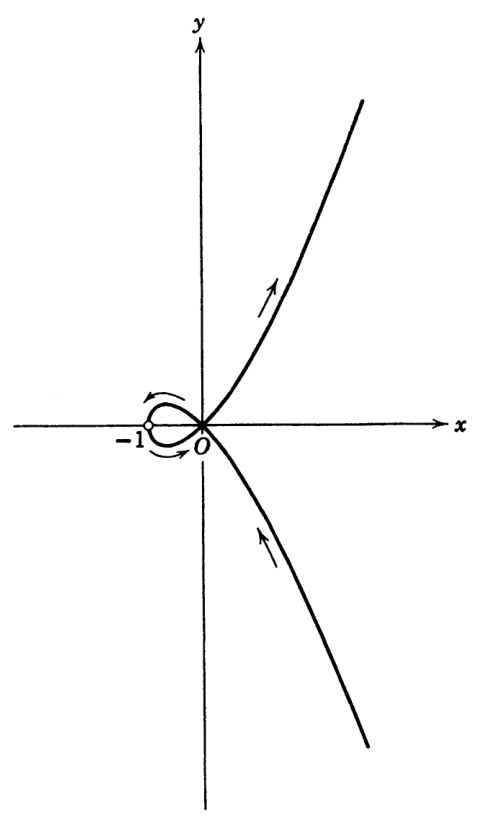
图 4.9 带环曲线 ，箭头指向 增大的方向 闭曲线
不同的 t t t x = a cos t , y = a sin t x=a\cos t,\ y=a\sin t x = a cos t , y = a sin t t t t t t t − ∞ -\infty − ∞ + ∞ +\infty + ∞ P = ( x , y ) P=(x,y) P = ( x , y ) t t t 2 π 2\pi 2 π α ≤ t < α + 2 π \alpha\le t<\alpha+2\pi α ≤ t < α + 2 π α , α + 2 π \alpha,\alpha+2\pi α , α + 2 π
一般地，定义在闭区间 a ≤ t ≤ b a\le t\le b a ≤ t ≤ b x = ϕ ( t ) , y = ψ ( t ) x=\phi(t),\ y=\psi(t) x = ϕ ( t ) , y = ψ ( t ) ϕ ( a ) = ϕ ( b ) , ψ ( a ) = ψ ( b ) \phi(a)=\phi(b),\ \psi(a)=\psi(b) ϕ ( a ) = ϕ ( b ) , ψ ( a ) = ψ ( b ) 闭曲线 。若 a ≤ t < b a\le t<b a ≤ t < b ( x , y ) (x,y) ( x , y ) t = a t=a t = a t = b t=b t = b
用周期函数表示闭曲线
如同圆的例子，取周期为 p = b − a p=b-a p = b − a ϕ ( t ) , ψ ( t ) \phi(t),\psi(t) ϕ ( t ) , ψ ( t )
若函数 f ( t ) f(t) f ( t ) t t t f ( t ) = f ( t + p ) f(t)=f(t+p) f ( t ) = f ( t + p ) 周期为 p p p 。例如，sin t \sin t sin t cos t \cos t cos t 2 π 2\pi 2 π 2 n π 2n\pi 2 nπ f ( t ) f(t) f ( t ) p p p p p p f ( t ) f(t) f ( t ) p p p p = b − a p=b-a p = b − a a ≤ t < b a\le t<b a ≤ t < b t t t t t t a ≤ t ′ < b a\le t'<b a ≤ t ′ < b t ′ t' t ′ n n n t − t ′ = n p t-t'=np t − t ′ = n p n n n ( t − a ) / p (t-a)/p ( t − a ) / p f ( t ) = f ( t ′ ) f(t)=f(t') f ( t ) = f ( t ′ )
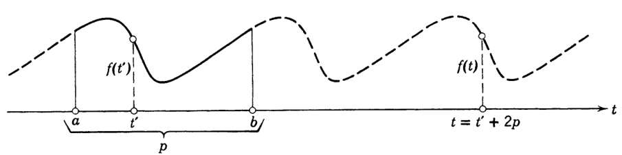
图 4.10 周期函数的图像 事实上，可以由半开区间 a ≤ t < b a\le t<b a ≤ t < b t = a + n p t=a+np t = a + n p n n n t t t 0 ≤ t < 1 0\le t<1 0 ≤ t < 1 f ( t ) = t f(t)=t f ( t ) = t p = 1 p=1 p = 1 t t t t = a + n p t=a+np t = a + n p f f f f ( a ) f(a) f ( a ) f f f b b b a ≤ t ≤ b a\le t\le b a ≤ t ≤ b f ( a ) = f ( b ) f(a)=f(b) f ( a ) = f ( b ) t t t p = b − a p=b-a p = b − a
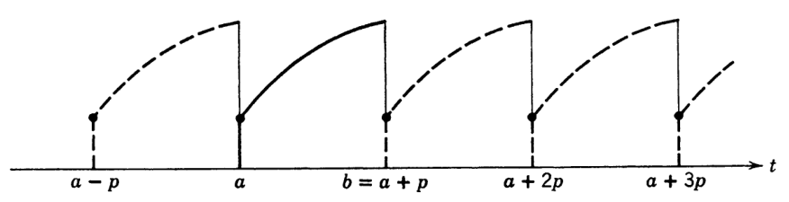
图 4.11 从 周期延拓函数 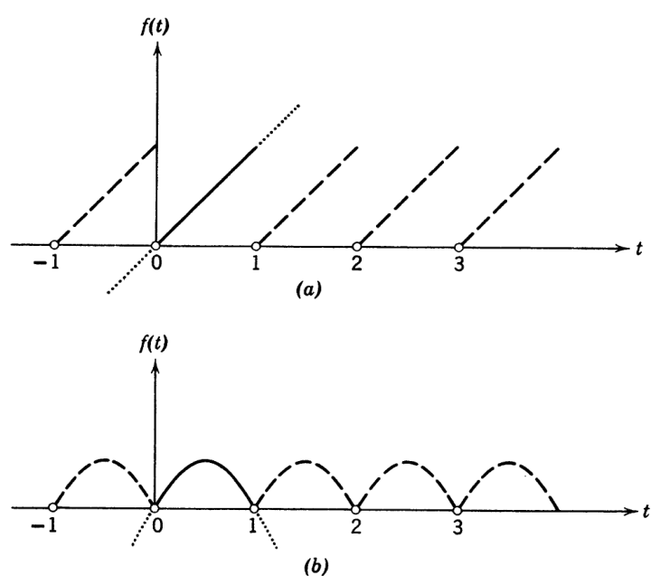
图 4.12 从 周期延拓。（a），（b） 连续周期函数用来表示闭曲线 C C C C C C x = ϕ ( t ) , y = ψ ( t ) x=\phi(t),\ y=\psi(t) x = ϕ ( t ) , y = ψ ( t ) ϕ , ψ \phi,\psi ϕ , ψ a ≤ t ≤ b a\le t\le b a ≤ t ≤ b t t t b − a = p b-a=p b − a = p t t t C C C t = t ′ + n p t=t'+np t = t ′ + n p n n n a ≤ t ′ ≤ b a\le t'\le b a ≤ t ′ ≤ b t t t t ′ t' t ′ C C C t t t − ∞ -\infty − ∞ + ∞ +\infty + ∞ ( x , y ) (x,y) ( x , y ) C C C x = a cos t , y = a sin t x=a\cos t,\ y=a\sin t x = a cos t , y = a sin t t = a t=a t = a α \alpha α t t t α \alpha α α + p \alpha+p α + p x = ϕ ( t ) , y = ψ ( t ) x=\phi(t),\ y=\psi(t) x = ϕ ( t ) , y = ψ ( t )
闭曲线 C C C α ≤ t ≤ β \alpha\le t\le\beta α ≤ t ≤ β t t t ( x , y ) (x,y) ( x , y ) α ≤ t < α + p \alpha\le t<\alpha+p α ≤ t < α + p t t t C C C C C C p p p
由简单弧组成的闭曲线。点的次序
我们所考察的闭曲线都可以分成简单弧。如果整个闭曲线 C C C t 0 ≤ t ≤ t 1 t_0\le t\le t_1 t 0 ≤ t ≤ t 1 t 1 ≤ t ≤ t 0 + p t_1\le t\le t_0+p t 1 ≤ t ≤ t 0 + p P 0 , P 1 P_0,P_1 P 0 , P 1 t t t C C C C C C 定向 。简单闭曲线 C C C P 0 , P 1 P_0,P_1 P 0 , P 1 t t t P 0 P_0 P 0 P 1 P_1 P 1 P 0 P 1 P_0P_1 P 0 P 1
定向与次序
还可以用 C C C P 0 P 1 P 2 P_0P_1P_2 P 0 P 1 P 2 P 2 P_2 P 2 P 0 P_0 P 0 P 1 P_1 P 1 P 0 P 1 P 2 P_0P_1P_2 P 0 P 1 P 2 P 1 P 2 P 0 P_1P_2P_0 P 1 P 2 P 0 P 2 P 0 P 1 P_2P_0P_1 P 2 P 0 P 1
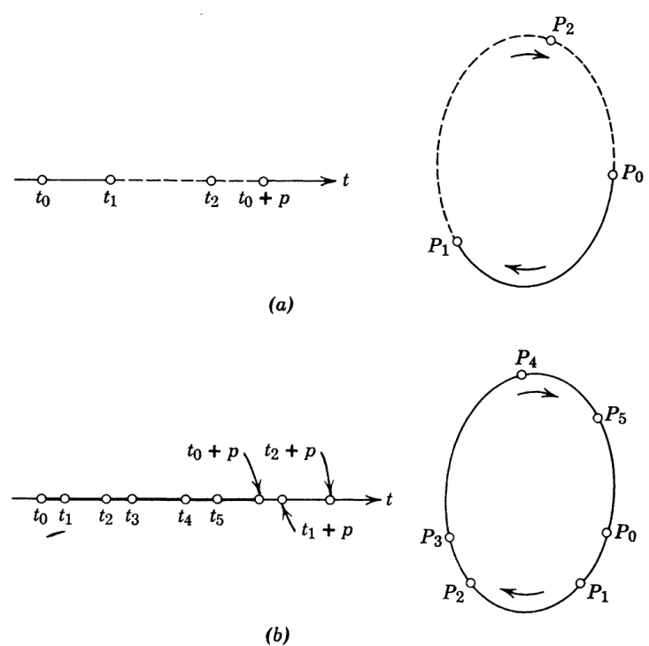
图 4.13 闭曲线沿 增大方向的定向 * 一般地，定向的简单闭曲线 C C C n n n P 1 P 2 ⋯ P n P_1P_2\cdots P_n P 1 P 2 ⋯ P n C C C P 1 P 2 , … , P n − 1 P n , P n P 1 P_1P_2,\ldots,P_{n-1}P_n,P_nP_1 P 1 P 2 , … , P n − 1 P n , P n P 1 P 1 , P 2 , … , P n P_1,P_2,\ldots,P_n P 1 , P 2 , … , P n t 1 , t 2 , … , t n t_1,t_2,\ldots,t_n t 1 , t 2 , … , t n t i t_i t i p p p
原注 1（第 340 页） 即 P 2 P 3 ⋯ P n P 1 , P 3 P 4 ⋯ P n P 1 P 2 , … , P n P 1 ⋯ P n − 1 P_2P_3\cdots P_nP_1,\ P_3P_4\cdots P_nP_1P_2,\ldots,\ P_nP_1\cdots P_{n-1} P 2 P 3 ⋯ P n P 1 , P 3 P 4 ⋯ P n P 1 P 2 , … , P n P 1 ⋯ P n − 1
曲线的定向与角
第一章已强调，要在几何对象和用数表示的分析概念之间建立令人满意的关系，非用正负号不可。有向直线，例如数轴，是最简单的例子。一条直线的哪个方向规定为正，起初是任意的。直线的任一具体参数表示 x = a t + b , y = c t + d x=at+b,\ y=ct+d x = a t + b , y = c t + d t t t P 0 P_0 P 0 P 0 P_0 P 0
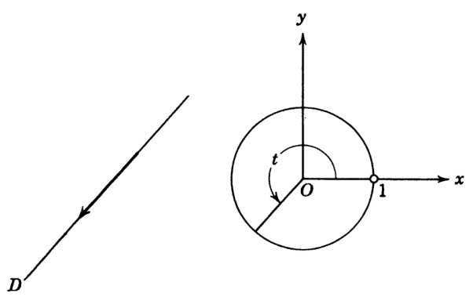
图 4.14 方向 的倾角 平面上任一方向，都可以用从原点出发的一条射线表示，或用以原点为心的单位圆上落在这条射线上的点 P P P x = cos t , y = sin t x=\cos t,\ y=\sin t x = cos t , y = sin t 2 π 2\pi 2 π t t t 倾角 ，或该方向与 x x x 0 ≤ t < 2 π 0\le t<2\pi 0 ≤ t < 2 π t t t
两个方向之间的角就是其倾角之差。更确切地说，因取两方向的先后次序有关系，规定倾角为 t ′ t' t ′ t ′ ′ t'' t ′′ α = t ′ − t ′ ′ \alpha=t'-t'' α = t ′ − t ′′ 2 π 2\pi 2 π
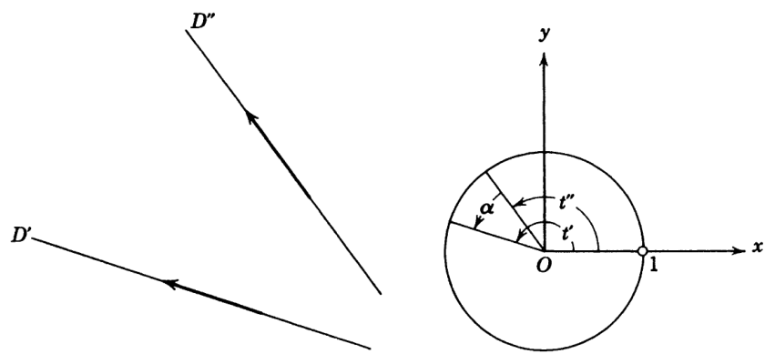
图 4.15 方向 相对于方向 所成的角 旋转的方向
也说把倾角为 t ′ ′ t'' t ′′ α \alpha α t ′ t' t ′ t ′ ′ t'' t ′′ t ′ t' t ′ t t t α = t ′ − t ′ ′ \alpha=t'-t'' α = t ′ − t ′′ − π < α ≤ π -\pi<\alpha\le\pi − π < α ≤ π
归根到底，旋转的正向系于我们选定的圆的参数表示 x = cos t , y = sin t x=\cos t,\ y=\sin t x = cos t , y = sin t x x x y y y
原注 1（第 342 页） 钟表指针的转向，又是取法于北半球日晷上日影在地面的运动方向。
曲线的正侧与负侧
曲线在它的一点 P P P C C C P P P P P P P P P Q Q Q P P P Q Q Q 0 0 0 π \pi π P P P C C C
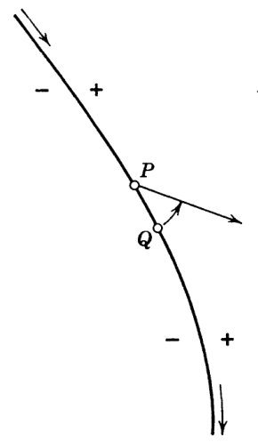
图 4.16 有向弧的正侧与负侧 若 C C C C C C C C C C C C C C C C C C
原注 2（第 342 页） “左”“右”两侧的说法，正如说河流的“左岸”“右岸”时，按水流方向确定左右。
原注 3（第 342 页） 这些概念以及简单闭连续曲线把平面分为两部分这一事实，在拓扑学中才作精确分析。在这里必须凭直观接受它们。
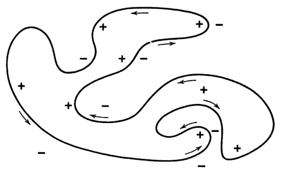
图 4.17 取逆时针定向的简单闭曲线 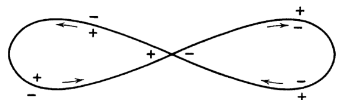
图 4.18 e. 参数表示下的导数、切线与法线
方向与速率
设曲线 C C C t t t x = x ( t ) = ϕ ( t ) , y = y ( t ) = ψ ( t ) x=x(t)=\phi(t),\ y=y(t)=\psi(t) x = x ( t ) = ϕ ( t ) , y = y ( t ) = ψ ( t ) x ˙ = d ϕ / d t = ϕ ˙ , y ˙ = d ψ / d t = ψ ˙ \dot x=d\phi/dt=\dot\phi,\ \dot y=d\psi/dt=\dot\psi x ˙ = d ϕ / d t = ϕ ˙ , y ˙ = d ψ / d t = ψ ˙ x ˙ , y ˙ \dot x,\dot y x ˙ , y ˙ C C C P P P
凡 x ˙ ≠ 0 \dot x\ne0 x ˙ = 0 t t t x x x t t t C C C y = f ( x ) y=f(x) y = f ( x )
d y d x = d y d t d t d x = d y / d t d x / d t = y ˙ x ˙ .
\frac{dy}{dx}=\frac{dy}{dt}\frac{dt}{dx}=\frac{dy/dt}{dx/dt}=\frac{\dot y}{\dot x}.
d x d y = d t d y d x d t = d x / d t d y / d t = x ˙ y ˙ . 若 y ˙ ≠ 0 \dot y\ne0 y ˙ = 0 d x / d y = x ˙ / y ˙ dx/dy=\dot x/\dot y d x / d y = x ˙ / y ˙ x ˙ , y ˙ \dot x,\dot y x ˙ , y ˙ x ˙ 2 + y ˙ 2 ≠ 0 \dot x^2+\dot y^2\ne0 x ˙ 2 + y ˙ 2 = 0 y ˙ = 0 \dot y=0 y ˙ = 0 x ˙ = 0 \dot x=0 x ˙ = 0
原注 1（第 344 页） x ˙ 2 + y ˙ 2 ≠ 0 \dot x^2+\dot y^2\ne0 x ˙ 2 + y ˙ 2 = 0 y = x 2 y=x^2 y = x 2 x = t 3 , y = t 6 x=t^3,\ y=t^6 x = t 3 , y = t 6 t t t x ˙ 2 + y ˙ 2 \dot x^2+\dot y^2 x ˙ 2 + y ˙ 2
例如，对摆线（第 329 页式 (1)），有
x ˙ = a ( 1 − cos t ) = 2 a sin 2 t 2 , y ˙ = a sin t = 2 a sin t 2 cos t 2 , d y d x = cot t 2 .
\dot x=a(1-\cos t)=2a\sin^2\tfrac t2,\qquad
\dot y=a\sin t=2a\sin\tfrac t2\cos\tfrac t2,\qquad
\frac{dy}{dx}=\cot\tfrac t2.
x ˙ = a ( 1 − cos t ) = 2 a sin 2 2 t , y ˙ = a sin t = 2 a sin 2 t cos 2 t , d x d y = cot 2 t . 由此可见，除 t = 0 , ± 2 π , ± 4 π , … t=0,\pm2\pi,\pm4\pi,\ldots t = 0 , ± 2 π , ± 4 π , … x ˙ 2 + y ˙ 2 ≠ 0 \dot x^2+\dot y^2\ne0 x ˙ 2 + y ˙ 2 = 0 x x x y = 0 y=0 y = 0 y ′ = y ˙ / x ˙ = cot ( t / 2 ) y'=\dot y/\dot x=\cot(t/2) y ′ = y ˙ / x ˙ = cot ( t /2 )
切线、法线与方向余弦
曲线在点 ( x , y ) (x,y) ( x , y ) η − y = ( d y / d x ) ( ξ − x ) \eta-y=(dy/dx)(\xi-x) η − y = ( d y / d x ) ( ξ − x ) ξ , η \xi,\eta ξ , η x , y , d y / d x x,y,dy/dx x , y , d y / d x d y / d x = y ˙ / x ˙ dy/dx=\dot y/\dot x d y / d x = y ˙ / x ˙
( ξ − x ) y ˙ − ( η − y ) x ˙ = 0. (5)
(\xi-x)\dot y-(\eta-y)\dot x=0.\tag{5}
( ξ − x ) y ˙ − ( η − y ) x ˙ = 0. ( 5 ) 在 y ˙ ≠ 0 \dot y\ne0 y ˙ = 0 x x x y y y x ˙ , y ˙ \dot x,\dot y x ˙ , y ˙ ξ , η \xi,\eta ξ , η
曲线的法线 ，即过曲线上某点而垂直于该点切线的直线，其斜率为 − d x / d y -dx/dy − d x / d y
( ξ − x ) x ˙ + ( η − y ) y ˙ = 0. (6)
(\xi-x)\dot x+(\eta-y)\dot y=0.\tag{6}
( ξ − x ) x ˙ + ( η − y ) y ˙ = 0. ( 6 ) 若 C C C t t t t t t x = t 2 − 1 , y = t 3 − t x=t^2-1,\ y=t^3-t x = t 2 − 1 , y = t 3 − t t = − 1 t=-1 t = − 1 t = + 1 t=+1 t = + 1 ξ + η = 0 \xi+\eta=0 ξ + η = 0 ξ − η = 0 \xi-\eta=0 ξ − η = 0
由导数的定义，d y / d x = y ˙ / x ˙ = tan α dy/dx=\dot y/\dot x=\tan\alpha d y / d x = y ˙ / x ˙ = tan α α \alpha α x x x x x x α \alpha α α > 0 \alpha>0 α > 0 α < 0 \alpha<0 α < 0 α ± π , α ± 2 π , … \alpha\pm\pi,\alpha\pm2\pi,\ldots α ± π , α ± 2 π , … α \alpha α π \pi π tan α \tan\alpha tan α y ˙ / x ˙ = sin α / cos α \dot y/\dot x=\sin\alpha/\cos\alpha y ˙ / x ˙ = sin α / cos α x ˙ 2 + y ˙ 2 ≠ 0 \dot x^2+\dot y^2\ne0 x ˙ 2 + y ˙ 2 = 0
cos α = ± x ˙ x ˙ 2 + y ˙ 2 , sin α = ± y ˙ x ˙ 2 + y ˙ 2 ,
\cos\alpha=\pm\frac{\dot x}{\sqrt{\dot x^2+\dot y^2}},\qquad
\sin\alpha=\pm\frac{\dot y}{\sqrt{\dot x^2+\dot y^2}},
cos α = ± x ˙ 2 + y ˙ 2 x ˙ , sin α = ± x ˙ 2 + y ˙ 2 y ˙ , 两式必须取同一个符号。称 cos α , sin α \cos\alpha,\sin\alpha cos α , sin α 方向余弦 。¹
原注 1（第 345 页） 这里将 sin α \sin\alpha sin α cos β \cos\beta cos β β = π / 2 − α \beta=\pi/2-\alpha β = π /2 − α y y y
给切线与法线定向
方向余弦的两种取法，对应于沿切线行进的两个方向，相应的 α \alpha α π \pi π t t t t t t t t t x x x α \alpha α cos α \cos\alpha cos α x ˙ \dot x x ˙ sin α \sin\alpha sin α y ˙ \dot y y ˙
cos α = x ˙ x ˙ 2 + y ˙ 2 , sin α = y ˙ x ˙ 2 + y ˙ 2 . (7)
\cos\alpha=\frac{\dot x}{\sqrt{\dot x^2+\dot y^2}},\qquad
\sin\alpha=\frac{\dot y}{\sqrt{\dot x^2+\dot y^2}}.\tag{7}
cos α = x ˙ 2 + y ˙ 2 x ˙ , sin α = x ˙ 2 + y ˙ 2 y ˙ . ( 7 ) 例如若 x ˙ = d x / d t > 0 \dot x=dx/dt>0 x ˙ = d x / d t > 0 t t t x x x x x x t t t π / 2 \pi/2 π /2
cos ( α + π / 2 ) = − y ˙ x ˙ 2 + y ˙ 2 , sin ( α + π / 2 ) = x ˙ x ˙ 2 + y ˙ 2 .
\cos(\alpha+\pi/2)=\frac{-\dot y}{\sqrt{\dot x^2+\dot y^2}},\qquad
\sin(\alpha+\pi/2)=\frac{\dot x}{\sqrt{\dot x^2+\dot y^2}}.
cos ( α + π /2 ) = x ˙ 2 + y ˙ 2 − y ˙ , sin ( α + π /2 ) = x ˙ 2 + y ˙ 2 x ˙ . 称之为正法线方向 ，它指向曲线的“正侧”（图 4.19）。若在曲线上引进新参数 τ = χ ( t ) \tau=\chi(t) τ = χ ( t ) d τ / d t > 0 d\tau/dt>0 d τ / d t > 0 cos α , sin α \cos\alpha,\sin\alpha cos α , sin α d τ / d t < 0 d\tau/dt<0 d τ / d t < 0
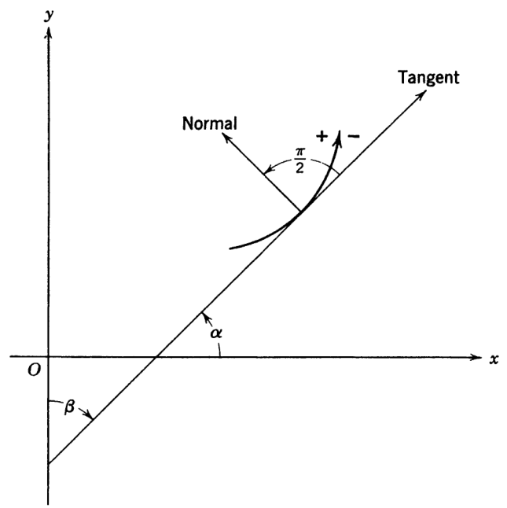
图 4.19 定向曲线的正切线与正法线 临界点
若 x ˙ , y ˙ \dot x,\dot y x ˙ , y ˙ x ˙ 2 + y ˙ 2 > 0 \dot x^2+\dot y^2>0 x ˙ 2 + y ˙ 2 > 0 cos α , sin α \cos\alpha,\sin\alpha cos α , sin α t t t ( ξ − x ) sin α − ( η − y ) cos α = 0 (\xi-x)\sin\alpha-(\eta-y)\cos\alpha=0 ( ξ − x ) sin α − ( η − y ) cos α = 0
若某个 t t t x ˙ , y ˙ \dot x,\dot y x ˙ , y ˙ 临界点 或驻点 。几个例子可以说明驻点处的各种可能性。曲线 y = ∣ x ∣ y=|x| y = ∣ x ∣ x = t 3 , y = ∣ t ∣ 3 x=t^3,\ y=|t|^3 x = t 3 , y = ∣ t ∣ 3 x ˙ , y ˙ \dot x,\dot y x ˙ , y ˙ t = 0 t=0 t = 0 x ˙ = y ˙ = 0 \dot x=\dot y=0 x ˙ = y ˙ = 0 x ˙ , y ˙ \dot x,\dot y x ˙ , y ˙ x = t 3 , y = t 3 x=t^3,\ y=t^3 x = t 3 , y = t 3 t = 0 t=0 t = 0
折角
对由几段光滑弧在折角处相接而成的曲线，用连续而导数 x ˙ , y ˙ \dot x,\dot y x ˙ , y ˙ x ( t ) , y ( t ) x(t),y(t) x ( t ) , y ( t )
x = t , y = 0 ( t ≤ 0 ) , x = t , y = t ( t ≥ 0 ) .
x=t,\quad y=0\quad(t\le0),\qquad x=t,\quad y=t\quad(t\ge0).
x = t , y = 0 ( t ≤ 0 ) , x = t , y = t ( t ≥ 0 ) . 这里在 t < 0 t<0 t < 0 x ˙ = 1 , y ˙ = 0 \dot x=1,\ \dot y=0 x ˙ = 1 , y ˙ = 0 t > 0 t>0 t > 0 x ˙ = 1 , y ˙ = 1 \dot x=1,\ \dot y=1 x ˙ = 1 , y ˙ = 1 t = 0 t=0 t = 0
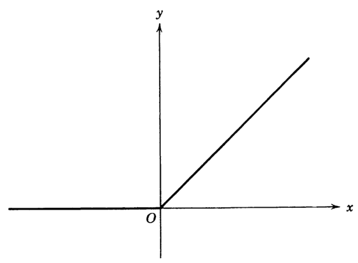
图 4.20 的图像 f. 曲线的长度
用积分表示长度
曲线的几何性质或几何量分为两类。第一类只依赖曲线的局部性态，即一点紧邻之处的情形，可以用该点处的导数表达。第二类是整体性质，依赖整条曲线或其中一段的全部形状，在分析上通常借积分概念来表示。我们从第二类的一个量，即曲线的长度谈起。
曲线长度的含义自然有直观概念。不过，同圆弧这个经典例子一样，仍须给直观概念赋予精确的数学意义。在直观的引导下，把任意曲线的长度定义为逼近它的折线，特别是内接折线的长度的极限。一经选定长度单位，折线长便可直接定义。最后将得到以积分表示长度的表达式。
设曲线为 x = x ( t ) , y = y ( t ) , α ≤ t ≤ β x=x(t),\ y=y(t),\ \alpha\le t\le\beta x = x ( t ) , y = y ( t ) , α ≤ t ≤ β α \alpha α β \beta β t 1 , t 2 , … , t n − 1 t_1,t_2,\ldots,t_{n-1} t 1 , t 2 , … , t n − 1 α = t 0 < t 1 < ⋯ < t n − 1 < t n = β \alpha=t_0<t_1<\cdots<t_{n-1}<t_n=\beta α = t 0 < t 1 < ⋯ < t n − 1 < t n = β t i t_i t i P 0 , P 1 , … , P n P_0,P_1,\ldots,P_n P 0 , P 1 , … , P n t i t_i t i P i P_i P i ( t i , t i + 1 ) (t_i,t_{i+1}) ( t i , t i + 1 ) 可求长性 的假设）成立时，才可以说曲线有长度。
设 x ( t ) , y ( t ) x(t),y(t) x ( t ) , y ( t ) α ≤ t ≤ β \alpha\le t\le\beta α ≤ t ≤ β x ˙ ( t ) , y ˙ ( t ) \dot x(t),\dot y(t) x ˙ ( t ) , y ˙ ( t ) t i t_i t i Δ t i = t i + 1 − t i \Delta t_i=t_{i+1}-t_i Δ t i = t i + 1 − t i P i = ( x ( t i ) , y ( t i ) ) P_i=(x(t_i),y(t_i)) P i = ( x ( t i ) , y ( t i ))
S = ∑ i = 0 n − 1 P i P i + 1 ‾ = ∑ i = 0 n − 1 [ x ( t i + 1 ) − x ( t i ) ] 2 + [ y ( t i + 1 ) − y ( t i ) ] 2
S=\sum_{i=0}^{n-1}\overline{P_iP_{i+1}}
=\sum_{i=0}^{n-1}\sqrt{[x(t_{i+1})-x(t_i)]^2+[y(t_{i+1})-y(t_i)]^2}
S = i = 0 ∑ n − 1 P i P i + 1 = i = 0 ∑ n − 1 [ x ( t i + 1 ) − x ( t i ) ] 2 + [ y ( t i + 1 ) − y ( t i ) ] 2 （见第 356 页图 4.21）。由微分中值定理，有
x ( t i + 1 ) − x ( t i ) = x ˙ ( ξ i ) Δ t i , y ( t i + 1 ) − y ( t i ) = y ˙ ( η i ) Δ t i ,
x(t_{i+1})-x(t_i)=\dot x(\xi_i)\Delta t_i,\qquad
y(t_{i+1})-y(t_i)=\dot y(\eta_i)\Delta t_i,
x ( t i + 1 ) − x ( t i ) = x ˙ ( ξ i ) Δ t i , y ( t i + 1 ) − y ( t i ) = y ˙ ( η i ) Δ t i , 其中 ξ i , η i \xi_i,\eta_i ξ i , η i t i < t < t i + 1 t_i<t<t_{i+1} t i < t < t i + 1 Δ t i \Delta t_i Δ t i
S n = ∑ i = 0 n − 1 [ x ˙ ( ξ i ) ] 2 + [ y ˙ ( η i ) ] 2 Δ t i .
S_n=\sum_{i=0}^{n-1}\sqrt{[\dot x(\xi_i)]^2+[\dot y(\eta_i)]^2}\,\Delta t_i.
S n = i = 0 ∑ n − 1 [ x ˙ ( ξ i ) ] 2 + [ y ˙ ( η i ) ] 2 Δ t i . 当分点数无限增大，而最大的 Δ t i \Delta t_i Δ t i S n S_n S n L = ∫ α β x ˙ 2 + y ˙ 2 d t L=\int_\alpha^\beta\sqrt{\dot x^2+\dot y^2}\,dt L = ∫ α β x ˙ 2 + y ˙ 2 d t x ˙ , y ˙ \dot x,\dot y x ˙ , y ˙
L = ∫ α β x ˙ 2 + y ˙ 2 d t . (8)
L=\int_\alpha^\beta\sqrt{\dot x^2+\dot y^2}\,dt.\tag{8}
L = ∫ α β x ˙ 2 + y ˙ 2 d t . ( 8 ) 原注 1（第 349 页） 由于中间点 ξ i , η i \xi_i,\eta_i ξ i , η i
译者注 原书第 349 页的 S n S_n S n x ˙ , y ˙ \dot x,\dot y x ˙ , y ˙
即使允许 x ˙ , y ˙ \dot x,\dot y x ˙ , y ˙
长度的另一个定义
还可补充一个有趣的观察：任一内接折线 π \pi π S S S L L L L L L L L L S S S π \pi π L L L S S S S ≤ L S\le L S ≤ L L L L t t t
参数变换下长度的不变性
由定义显然可见，曲线 C C C L L L τ = χ ( t ) \tau=\chi(t) τ = χ ( t ) d τ / d t > 0 d\tau/dt>0 d τ / d t > 0 L L L t t t τ \tau τ
x ˙ 2 + y ˙ 2 = ( d x d t ) 2 + ( d y d t ) 2 = ( d x d τ d τ d t ) 2 + ( d y d τ d τ d t ) 2 = ( d x d τ ) 2 + ( d y d τ ) 2 d τ d t .
\sqrt{\dot x^2+\dot y^2}=\sqrt{\left(\frac{dx}{dt}\right)^2+\left(\frac{dy}{dt}\right)^2}
=\sqrt{\left(\frac{dx}{d\tau}\frac{d\tau}{dt}\right)^2+\left(\frac{dy}{d\tau}\frac{d\tau}{dt}\right)^2}
=\sqrt{\left(\frac{dx}{d\tau}\right)^2+\left(\frac{dy}{d\tau}\right)^2}\frac{d\tau}{dt}.
x ˙ 2 + y ˙ 2 = ( d t d x ) 2 + ( d t d y ) 2 = ( d τ d x d t d τ ) 2 + ( d τ d y d t d τ ) 2 = ( d τ d x ) 2 + ( d τ d y ) 2 d t d τ . 所以若 χ ( α ) = a , χ ( β ) = b \chi(\alpha)=a,\ \chi(\beta)=b χ ( α ) = a , χ ( β ) = b
L = ∫ α β x ˙ 2 + y ˙ 2 d t = ∫ α β ( d x d τ ) 2 + ( d y d τ ) 2 d τ d t d t = ∫ a b ( d x d τ ) 2 + ( d y d τ ) 2 d τ .
L=\int_\alpha^\beta\sqrt{\dot x^2+\dot y^2}\,dt
=\int_\alpha^\beta\sqrt{\left(\frac{dx}{d\tau}\right)^2+\left(\frac{dy}{d\tau}\right)^2}
\frac{d\tau}{dt}\,dt
=\int_a^b\sqrt{\left(\frac{dx}{d\tau}\right)^2+\left(\frac{dy}{d\tau}\right)^2}\,d\tau.
L = ∫ α β x ˙ 2 + y ˙ 2 d t = ∫ α β ( d τ d x ) 2 + ( d τ d y ) 2 d t d τ d t = ∫ a b ( d τ d x ) 2 + ( d τ d y ) 2 d τ . 因此以 τ \tau τ L L L d τ / d t < 0 d\tau/dt<0 d τ / d t < 0
∫ α β x ˙ 2 + y ˙ 2 d t = − ∫ a b ( d x d τ ) 2 + ( d y d τ ) 2 d τ = ∫ b a ( d x d τ ) 2 + ( d y d τ ) 2 d τ .
\int_\alpha^\beta\sqrt{\dot x^2+\dot y^2}\,dt
=-\int_a^b\sqrt{\left(\frac{dx}{d\tau}\right)^2+\left(\frac{dy}{d\tau}\right)^2}\,d\tau
=\int_b^a\sqrt{\left(\frac{dx}{d\tau}\right)^2+\left(\frac{dy}{d\tau}\right)^2}\,d\tau.
∫ α β x ˙ 2 + y ˙ 2 d t = − ∫ a b ( d τ d x ) 2 + ( d τ d y ) 2 d τ = ∫ b a ( d τ d x ) 2 + ( d τ d y ) 2 d τ . 此时 χ \chi χ b < a b<a b < a τ \tau τ C C C
对以非参数形式给出的曲线 y = f ( x ) , a ≤ x ≤ b y=f(x),\ a\le x\le b y = f ( x ) , a ≤ x ≤ b x x x t t t x ˙ = 1 , y ˙ = d y / d x \dot x=1,\ \dot y=dy/dx x ˙ = 1 , y ˙ = d y / d x
L = ∫ a b 1 + ( d y d x ) 2 d x . (9)
L=\int_a^b\sqrt{1+\left(\frac{dy}{dx}\right)^2}\,dx.\tag{9}
L = ∫ a b 1 + ( d x d y ) 2 d x . ( 9 ) 例。 对应于 a ≤ x ≤ b a\le x\le b a ≤ x ≤ b y = 1 2 x 2 y=\tfrac12x^2 y = 2 1 x 2 L = ∫ a b 1 + x 2 d x L=\int_a^b\sqrt{1+x^2}\,dx L = ∫ a b 1 + x 2 d x x = sinh t x=\sinh t x = sinh t
L = ∫ arsinh a arsinh b cosh 2 t d t = 1 2 ∫ arsinh a arsinh b ( 1 + cosh 2 t ) d t = 1 2 ( t + sinh t cosh t ) ∣ arsinh a arsinh b = 1 2 ( arsinh b + b 1 + b 2 − arsinh a − a 1 + a 2 ) .
\begin{aligned}
L&=\int_{\operatorname{arsinh} a}^{\operatorname{arsinh} b}\cosh^2 t\,dt
=\tfrac12\int_{\operatorname{arsinh} a}^{\operatorname{arsinh} b}(1+\cosh 2t)\,dt\\
&=\left.\tfrac12(t+\sinh t\cosh t)\right|_{\operatorname{arsinh} a}^{\operatorname{arsinh} b}
=\tfrac12(\operatorname{arsinh} b+b\sqrt{1+b^2}-\operatorname{arsinh} a-a\sqrt{1+a^2}).
\end{aligned}
L = ∫ arsinh a arsinh b cosh 2 t d t = 2 1 ∫ arsinh a arsinh b ( 1 + cosh 2 t ) d t = 2 1 ( t + sinh t cosh t ) arsinh a arsinh b = 2 1 ( arsinh b + b 1 + b 2 − arsinh a − a 1 + a 2 ) . 对用极坐标方程 r = r ( θ ) , α ≤ θ ≤ β r=r(\theta),\ \alpha\le\theta\le\beta r = r ( θ ) , α ≤ θ ≤ β x = r ( θ ) cos θ , y = r ( θ ) sin θ x=r(\theta)\cos\theta,\ y=r(\theta)\sin\theta x = r ( θ ) cos θ , y = r ( θ ) sin θ θ \theta θ x ˙ = r ˙ cos θ − r sin θ , y ˙ = r ˙ sin θ + r cos θ \dot x=\dot r\cos\theta-r\sin\theta,\ \dot y=\dot r\sin\theta+r\cos\theta x ˙ = r ˙ cos θ − r sin θ , y ˙ = r ˙ sin θ + r cos θ
L = ∫ α β r 2 + ( d r d θ ) 2 d θ . (10)
L=\int_\alpha^\beta\sqrt{r^2+\left(\frac{dr}{d\theta}\right)^2}\,d\theta.\tag{10}
L = ∫ α β r 2 + ( d θ d r ) 2 d θ . ( 10 ) 例如，以原点为心、半径为 a a a r = a r=a r = a 0 ≤ θ ≤ 2 π 0\le\theta\le2\pi 0 ≤ θ ≤ 2 π L = ∫ 0 2 π a d θ = 2 π a L=\int_0^{2\pi}a\,d\theta=2\pi a L = ∫ 0 2 π a d θ = 2 πa
长度的可加性
设曲线 C C C x = x ( t ) , y = y ( t ) , α ≤ t ≤ β x=x(t),\ y=y(t),\ \alpha\le t\le\beta x = x ( t ) , y = y ( t ) , α ≤ t ≤ β x ˙ , y ˙ \dot x,\dot y x ˙ , y ˙ α \alpha α β \beta β γ \gamma γ
∫ α β x ˙ 2 + y ˙ 2 d t = ∫ α γ x ˙ 2 + y ˙ 2 d t + ∫ γ β x ˙ 2 + y ˙ 2 d t .
\int_\alpha^\beta\sqrt{\dot x^2+\dot y^2}\,dt
=\int_\alpha^\gamma\sqrt{\dot x^2+\dot y^2}\,dt
+\int_\gamma^\beta\sqrt{\dot x^2+\dot y^2}\,dt.
∫ α β x ˙ 2 + y ˙ 2 d t = ∫ α γ x ˙ 2 + y ˙ 2 d t + ∫ γ β x ˙ 2 + y ˙ 2 d t . 右边两个积分分别是参数值 t = γ t=\gamma t = γ C C C
这里 x ˙ , y ˙ \dot x,\dot y x ˙ , y ˙ x ˙ , y ˙ \dot x,\dot y x ˙ , y ˙
g. 以弧长为参数
同一曲线可有许多不同的参数表示 x = x ( t ) , y = y ( t ) x=x(t),\ y=y(t) x = x ( t ) , y = y ( t ) t t t t t t C C C x x x θ \theta θ P P P P P P P 0 P_0 P 0
从 C C C x = x ( t ) , y = y ( t ) , α ≤ t ≤ β x=x(t),\ y=y(t),\ \alpha\le t\le\beta x = x ( t ) , y = y ( t ) , α ≤ t ≤ β t t t s s s
s = ∫ x ˙ 2 + y ˙ 2 d t . (11)
s=\int\sqrt{\dot x^2+\dot y^2}\,dt.\tag{11}
s = ∫ x ˙ 2 + y ˙ 2 d t . ( 11 ) 更确切地，s s s t t t
s = s ( t ) = c + ∫ t 0 t x ˙ 2 ( τ ) + y ˙ 2 ( τ ) d τ , (11a)
s=s(t)=c+\int_{t_0}^t\sqrt{\dot x^2(\tau)+\dot y^2(\tau)}\,d\tau,\tag{11a}
s = s ( t ) = c + ∫ t 0 t x ˙ 2 ( τ ) + y ˙ 2 ( τ ) d τ , ( 11a ) 其中 c c c t 0 t_0 t 0 α , β \alpha,\beta α , β τ \tau τ t t t t 1 , t 2 t_1,t_2 t 1 , t 2 t 1 < t 2 t_1<t_2 t 1 < t 2
s ( t 2 ) − s ( t 1 ) = ∫ t 1 t 2 x ˙ 2 + y ˙ 2 d τ (12)
s(t_2)-s(t_1)=\int_{t_1}^{t_2}\sqrt{\dot x^2+\dot y^2}\,d\tau\tag{12}
s ( t 2 ) − s ( t 1 ) = ∫ t 1 t 2 x ˙ 2 + y ˙ 2 d τ ( 12 ) 就是两端为 t = t 1 , t = t 2 t=t_1,\ t=t_2 t = t 1 , t = t 2 t 1 > t 2 t_1>t_2 t 1 > t 2 s s s
弧长的符号
若常数 c = 0 c=0 c = 0 s ( t ) s(t) s ( t ) t 0 t_0 t 0 P 0 P_0 P 0 t t t P P P P 0 P_0 P 0 P P P t t t
原注 1（第 353 页） 变量 s s s P 0 P_0 P 0 c c c t t t s s s s + 常数 s+\text{常数} s + 常数 − s + 常数 -s+\text{常数} − s + 常数
用积分定义 s s s
d s d t = ( d x d t ) 2 + ( d y d t ) 2 . (12a)
\frac{ds}{dt}=\sqrt{\left(\frac{dx}{dt}\right)^2+\left(\frac{dy}{dt}\right)^2}.\tag{12a}
d t d s = ( d t d x ) 2 + ( d t d y ) 2 . ( 12a ) 利用 d s = ( d s / d t ) d t ds=(ds/dt)\,dt d s = ( d s / d t ) d t d s = d x 2 + d y 2 ds=\sqrt{dx^2+dy^2} d s = d x 2 + d y 2
沿曲线运动的速率
若把 t t t x ( t ) , y ( t ) x(t),y(t) x ( t ) , y ( t ) t t t
s ˙ = d s d t = lim h → 0 s ( t + h ) − s ( t ) h
\dot s=\frac{ds}{dt}=\lim_{h\to0}\frac{s(t+h)-s(t)}h
s ˙ = d t d s = h → 0 lim h s ( t + h ) − s ( t ) 是质点沿其轨道行过的距离对时间的变化率，即质点的速率 。质点沿曲线以匀速率运动时，s ˙ \dot s s ˙ s s s t t t x ˙ 2 + y ˙ 2 ≠ 0 \dot x^2+\dot y^2\ne0 x ˙ 2 + y ˙ 2 = 0 d s / d t ≠ 0 ds/dt\ne0 d s / d t = 0 s s s
d x d s = d x d t d t d s = x ˙ x ˙ 2 + y ˙ 2 , d y d s = d y d t d t d s = y ˙ x ˙ 2 + y ˙ 2
\frac{dx}{ds}=\frac{dx}{dt}\frac{dt}{ds}=\frac{\dot x}{\sqrt{\dot x^2+\dot y^2}},\qquad
\frac{dy}{ds}=\frac{dy}{dt}\frac{dt}{ds}=\frac{\dot y}{\sqrt{\dot x^2+\dot y^2}}
d s d x = d t d x d s d t = x ˙ 2 + y ˙ 2 x ˙ , d s d y = d t d y d s d t = x ˙ 2 + y ˙ 2 y ˙ 恰是指向 s s s
( d x d s ) 2 + ( d y d s ) 2 = 1 (13)
\left(\frac{dx}{ds}\right)^2+\left(\frac{dy}{ds}\right)^2=1\tag{13}
( d s d x ) 2 + ( d s d y ) 2 = 1 ( 13 ) 刻画了参数 s s s
h. 曲率
用方向的变化率定义曲率
接下来讨论一个只涉及曲线在一点附近局部性态的基本概念，即曲率 。当我们沿曲线行进时，曲线的倾角 α \alpha α
κ = d α d s . (14)
\kappa=\frac{d\alpha}{ds}.\tag{14}
κ = d s d α . ( 14 ) 参数表达式。 设曲线由参数函数 x = x ( t ) , y = y ( t ) x=x(t),\ y=y(t) x = x ( t ) , y = y ( t ) t t t x ˙ 2 + y ˙ 2 ≠ 0 \dot x^2+\dot y^2\ne0 x ˙ 2 + y ˙ 2 = 0 P P P α \alpha α α \alpha α tan α = y ˙ / x ˙ \tan\alpha=\dot y/\dot x tan α = y ˙ / x ˙ x ˙ = 0 \dot x=0 x ˙ = 0 cot α = x ˙ / y ˙ \cot\alpha=\dot x/\dot y cot α = x ˙ / y ˙ d α / d s d\alpha/ds d α / d s P P P x ˙ , y ˙ \dot x,\dot y x ˙ , y ˙ x ˙ ≠ 0 \dot x\ne0 x ˙ = 0 α \alpha α t t t
α = α ( t ) = arctan y ˙ x ˙ + n π ,
\alpha=\alpha(t)=\arctan\frac{\dot y}{\dot x}+n\pi,
α = α ( t ) = arctan x ˙ y ˙ + nπ , 其中 n n n arctan \arctan arctan − π / 2 -\pi/2 − π /2 π / 2 \pi/2 π /2 y ˙ ≠ 0 \dot y\ne0 y ˙ = 0
α ( t ) = arccot x ˙ y ˙ + n π = π 2 − arctan x ˙ y ˙ + n π .
\alpha(t)=\operatorname{arccot}\frac{\dot x}{\dot y}+n\pi
=\frac\pi2-\arctan\frac{\dot x}{\dot y}+n\pi.
α ( t ) = arccot y ˙ x ˙ + nπ = 2 π − arctan y ˙ x ˙ + nπ . 原注 1（第 355 页） 把整个参数区间分成一些小区间，使每一段内或者 x ˙ ≠ 0 \dot x\ne0 x ˙ = 0 y ˙ ≠ 0 \dot y\ne0 y ˙ = 0 α ( t ) \alpha(t) α ( t ) t t t n n n α \alpha α
无论哪种情形，对任何参数表示直接求导都得到 α ˙ = d α / d t = ( x ˙ y ¨ − x ¨ y ˙ ) / ( x ˙ 2 + y ˙ 2 ) \dot\alpha=d\alpha/dt=(\dot x\ddot y-\ddot x\dot y)/(\dot x^2+\dot y^2) α ˙ = d α / d t = ( x ˙ y ¨ − x ¨ y ˙ ) / ( x ˙ 2 + y ˙ 2 ) s ˙ = d s / d t = x ˙ 2 + y ˙ 2 \dot s=ds/dt=\sqrt{\dot x^2+\dot y^2} s ˙ = d s / d t = x ˙ 2 + y ˙ 2 d α / d s = α ˙ / s ˙ d\alpha/ds=\dot\alpha/\dot s d α / d s = α ˙ / s ˙
κ = d α d s = α ˙ s ˙ = x ˙ y ¨ − y ˙ x ¨ ( x ˙ 2 + y ˙ 2 ) 3 / 2 . (15)
\kappa=\frac{d\alpha}{ds}=\frac{\dot\alpha}{\dot s}
=\frac{\dot x\ddot y-\dot y\ddot x}{(\dot x^2+\dot y^2)^{3/2}}.\tag{15}
κ = d s d α = s ˙ α ˙ = ( x ˙ 2 + y ˙ 2 ) 3/2 x ˙ y ¨ − y ˙ x ¨ . ( 15 ) 特别地，若取弧长 s s s t t t x ˙ 2 + y ˙ 2 = 1 \dot x^2+\dot y^2=1 x ˙ 2 + y ˙ 2 = 1
κ = x ˙ y ¨ − y ˙ x ¨ . (15a)
\kappa=\dot x\ddot y-\dot y\ddot x.\tag{15a}
κ = x ˙ y ¨ − y ˙ x ¨ . ( 15a ) 曲率的符号与绝对值
引进新参数 τ = τ ( t ) \tau=\tau(t) τ = τ ( t ) t t t α \alpha α s s s s s s t t t ∣ κ ∣ = ∣ d α / d s ∣ |\kappa|=|d\alpha/ds| ∣ κ ∣ = ∣ d α / d s ∣ κ \kappa κ t t t κ > 0 \kappa>0 κ > 0 α \alpha α s s s s s s t t t C C C C C C
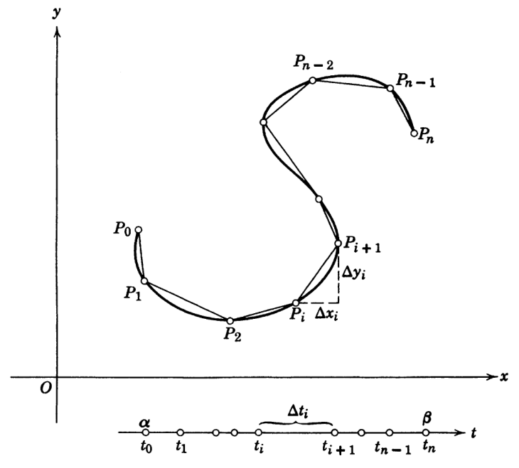
图 4.21 曲线的求长 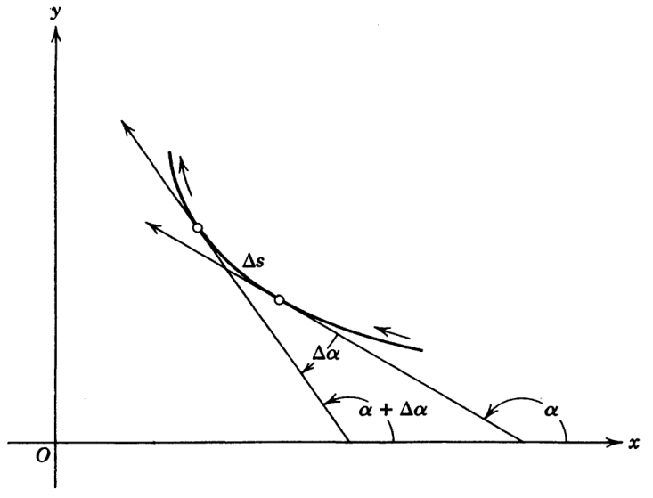
图 4.21(a) 曲率是 的极限。图示情形中 若曲线为 y = f ( x ) y=f(x) y = f ( x ) x x x
κ = y ′ ′ ( 1 + y ′ 2 ) 3 / 2 , (16)
\kappa=\frac{y''}{(1+y'^2)^{3/2}},\tag{16}
κ = ( 1 + y ′2 ) 3/2 y ′′ , ( 16 ) 其中 y ′ , y ′ ′ y',y'' y ′ , y ′′ y y y x x x x x x y ′ ′ > 0 y''>0 y ′′ > 0 κ \kappa κ x x x f ( x ) f(x) f ( x ) 凸函数 。曲线上连接任意两点的一段位于它们的连线之下。y ′ ′ < 0 y''<0 y ′′ < 0 x x x f f f 凹函数 ，曲线在连接其上两点的弦的上方（图 4.22）。曲率为零的中间情形，一般说来对应于 y ′ ′ = 0 y''=0 y ′′ = 0
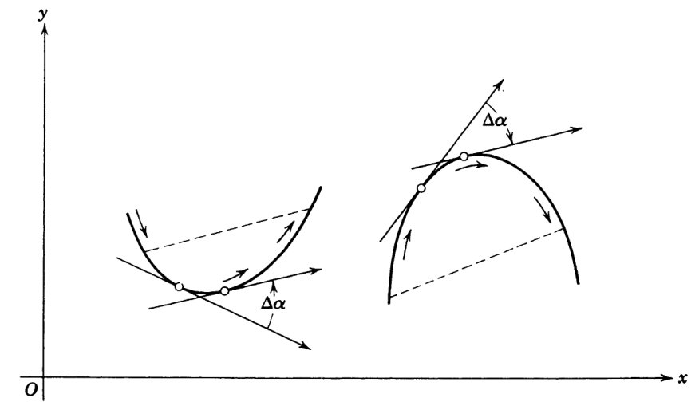
图 4.22 凸函数的图像（左）与凹函数的图像（右） 例。 由一般公式 (15)，半径为 a a a x = a cos t , y = a sin t x=a\cos t,\ y=a\sin t x = a cos t , y = a sin t 1 / a 1/a 1/ a y = x 3 y=x^3 y = x 3 κ = 6 x / ( 1 + 9 x 4 ) 3 / 2 \kappa=6x/(1+9x^4)^{3/2} κ = 6 x / ( 1 + 9 x 4 ) 3/2 x < 0 x<0 x < 0 κ < 0 \kappa<0 κ < 0 x = 0 x=0 x = 0 x > 0 x>0 x > 0
曲率圆与曲率中心
置 ρ = 1 / κ \rho=1/\kappa ρ = 1/ κ ∣ ρ ∣ = 1 / ∣ κ ∣ |\rho|=1/|\kappa| ∣ ρ ∣ = 1/∣ κ ∣ 曲率半径 。（若拐点处 κ = 0 \kappa=0 κ = 0
给曲线 C C C P = ( x , y ) P=(x,y) P = ( x , y ) P P P C C C P P P C C C P P P 曲率圆 ，圆心称为 C C C P P P 曲率中心 （图 4.23）。因为 C C C C C C ∣ ρ ∣ |\rho| ∣ ρ ∣ ( ξ , η ) (\xi,\eta) ( ξ , η ) P P P P P P ∣ ρ ∣ |\rho| ∣ ρ ∣ C C C P P P κ \kappa κ κ > 0 \kappa>0 κ > 0 P P P x x x α + π / 2 \alpha+\pi/2 α + π /2
ξ − x ρ = cos ( α + π / 2 ) = − sin α = − y ˙ x ˙ 2 + y ˙ 2 , η − y ρ = sin ( α + π / 2 ) = cos α = x ˙ x ˙ 2 + y ˙ 2 .
\frac{\xi-x}\rho=\cos(\alpha+\pi/2)=-\sin\alpha
=\frac{-\dot y}{\sqrt{\dot x^2+\dot y^2}},\qquad
\frac{\eta-y}\rho=\sin(\alpha+\pi/2)=\cos\alpha
=\frac{\dot x}{\sqrt{\dot x^2+\dot y^2}}.
ρ ξ − x = cos ( α + π /2 ) = − sin α = x ˙ 2 + y ˙ 2 − y ˙ , ρ η − y = sin ( α + π /2 ) = cos α = x ˙ 2 + y ˙ 2 x ˙ . 因此，当 κ > 0 \kappa>0 κ > 0
ξ = x − ρ y ˙ x ˙ 2 + y ˙ 2 , η = y + ρ x ˙ x ˙ 2 + y ˙ 2 . (17)
\xi=x-\frac{\rho\dot y}{\sqrt{\dot x^2+\dot y^2}},\qquad
\eta=y+\frac{\rho\dot x}{\sqrt{\dot x^2+\dot y^2}}.\tag{17}
ξ = x − x ˙ 2 + y ˙ 2 ρ y ˙ , η = y + x ˙ 2 + y ˙ 2 ρ x ˙ . ( 17 ) 若取弧长 s s s t t t
ξ = x − ρ y ˙ , η = y + ρ x ˙ . (17a)
\xi=x-\rho\dot y,\qquad \eta=y+\rho\dot x.\tag{17a}
ξ = x − ρ y ˙ , η = y + ρ x ˙ . ( 17a ) κ < 0 \kappa<0 κ < 0 ξ , η \xi,\eta ξ , η − ρ -\rho − ρ P P P x x x α − π / 2 \alpha-\pi/2 α − π /2
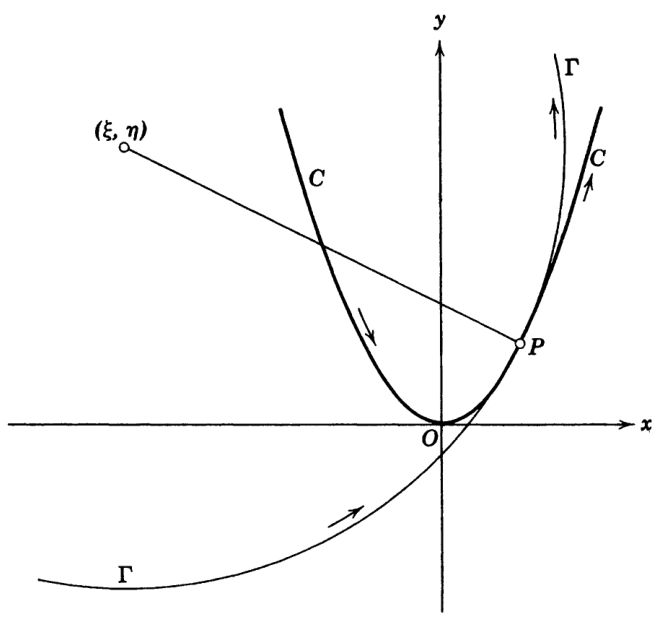
图 4.23 曲线 上点 所对应的曲率圆 与曲率中心 曲率圆作为密切圆
公式 (17) 把曲率中心表示为曲线上点 P P P t t t t t t 渐屈线 。由于 x , y x,y x , y x ˙ , y ˙ , ρ \dot x,\dot y,\rho x ˙ , y ˙ , ρ t t t
若两条曲线都过 P P P P P P P P P P P P y = f ( x ) , y = g ( x ) y=f(x),\ y=g(x) y = f ( x ) , y = g ( x ) P P P x x x P P P f ( x ) = g ( x ) , f ′ ( x ) = g ′ ( x ) f(x)=g(x),\ f'(x)=g'(x) f ( x ) = g ( x ) , f ′ ( x ) = g ′ ( x )
f ′ ′ ( x ) [ 1 + f ′ 2 ( x ) ] 3 / 2 = g ′ ′ ( x ) [ 1 + g ′ 2 ( x ) ] 3 / 2 ,
\frac{f''(x)}{[1+f'^2(x)]^{3/2}}=\frac{g''(x)}{[1+g'^2(x)]^{3/2}},
[ 1 + f ′2 ( x ) ] 3/2 f ′′ ( x ) = [ 1 + g ′2 ( x ) ] 3/2 g ′′ ( x ) , 所以还有 f ′ ′ ( x ) = g ′ ′ ( x ) f''(x)=g''(x) f ′′ ( x ) = g ′′ ( x )
考察 C : y = f ( x ) C:y=f(x) C : y = f ( x ) P P P Γ \Gamma Γ Γ \Gamma Γ P P P y = g ( x ) y=g(x) y = g ( x ) C C C Γ \Gamma Γ P P P f ( x ) = g ( x ) , f ′ ( x ) = g ′ ( x ) , f ′ ′ ( x ) = g ′ ′ ( x ) f(x)=g(x),\ f'(x)=g'(x),\ f''(x)=g''(x) f ( x ) = g ( x ) , f ′ ( x ) = g ′ ( x ) , f ′′ ( x ) = g ′′ ( x ) P P P C C C 密切圆 （另见原书第 459 页）。
顺便一提，正如切线是过曲线上相邻两点 P , P 1 P,P_1 P , P 1 P 1 → P P_1\to P P 1 → P P P P P , P 1 , P 2 P,P_1,P_2 P , P 1 , P 2 P 1 → P , P 2 → P P_1\to P,\ P_2\to P P 1 → P , P 2 → P
i. 坐标轴的变换与不变性
几何图形或物理现象本身所具有的性质，与描述它所用的特定坐标系或“参考系”无关。距离、长度、角度之类的量既然是内在的，从一个坐标系换到另一个坐标系时，相应的公式就应保持不变，即具有不变性 。这里略谈几句。
设同一点 P P P x , y x,y x , y ξ , η \xi,\eta ξ , η a , b a,b a , b x x x ξ \xi ξ γ \gamma γ
x = ξ cos γ − η sin γ + a , y = ξ sin γ + η cos γ + b . (18)
x=\xi\cos\gamma-\eta\sin\gamma+a,\qquad y=\xi\sin\gamma+\eta\cos\gamma+b.\tag{18}
x = ξ cos γ − η sin γ + a , y = ξ sin γ + η cos γ + b . ( 18 ) 若 γ = 0 \gamma=0 γ = 0 x = ξ + a , y = η + b x=\xi+a,\ y=\eta+b x = ξ + a , y = η + b
原注 1（第 361 页） 这里只考虑“右手”坐标系，即把第一根坐标轴的正向逆时针转 90 ∘ 90^\circ 9 0 ∘
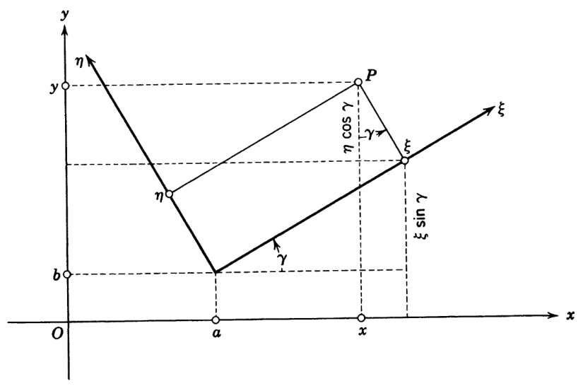
图 4.24 坐标轴的变换 解出 ξ , η \xi,\eta ξ , η
ξ = ( x − a ) cos γ + ( y − b ) sin γ , η = − ( x − a ) sin γ + ( y − b ) cos γ . (18a)
\xi=(x-a)\cos\gamma+(y-b)\sin\gamma,\qquad
\eta=-(x-a)\sin\gamma+(y-b)\cos\gamma.\tag{18a}
ξ = ( x − a ) cos γ + ( y − b ) sin γ , η = − ( x − a ) sin γ + ( y − b ) cos γ . ( 18a ) 若 x , y x,y x , y t t t ξ , η \xi,\eta ξ , η t t t ξ , η \xi,\eta ξ , η a , b , γ a,b,\gamma a , b , γ t t t t t t t t t
x ˙ = ξ ˙ cos γ − η ˙ sin γ , y ˙ = ξ ˙ sin γ + η ˙ cos γ .
\dot x=\dot\xi\cos\gamma-\dot\eta\sin\gamma,\qquad
\dot y=\dot\xi\sin\gamma+\dot\eta\cos\gamma.
x ˙ = ξ ˙ cos γ − η ˙ sin γ , y ˙ = ξ ˙ sin γ + η ˙ cos γ . 立即可验 x ˙ 2 + y ˙ 2 = ξ ˙ 2 + η ˙ 2 \dot x^2+\dot y^2=\dot\xi^2+\dot\eta^2 x ˙ 2 + y ˙ 2 = ξ ˙ 2 + η ˙ 2 x ˙ 2 + y ˙ 2 \sqrt{\dot x^2+\dot y^2} x ˙ 2 + y ˙ 2 t t t d s / d t ds/dt d s / d t κ = ( x ˙ y ¨ − x ¨ y ˙ ) ( x ˙ 2 + y ˙ 2 ) − 3 / 2 \kappa=(\dot x\ddot y-\ddot x\dot y)(\dot x^2+\dot y^2)^{-3/2} κ = ( x ˙ y ¨ − x ¨ y ˙ ) ( x ˙ 2 + y ˙ 2 ) − 3/2 ξ \xi ξ x x x γ \gamma γ κ = d α / d s \kappa=d\alpha/ds κ = d α / d s
原注 1（第 362 页） 在某些物理应用中，t t t x , y x,y x , y ξ , η \xi,\eta ξ , η x ( t ) , y ( t ) x(t),y(t) x ( t ) , y ( t ) ξ ( t ) , η ( t ) \xi(t),\eta(t) ξ ( t ) , η ( t ) x ˙ , y ˙ \dot x,\dot y x ˙ , y ˙ ξ ˙ , η ˙ \dot\xi,\dot\eta ξ ˙ , η ˙ a , b , γ a,b,\gamma a , b , γ
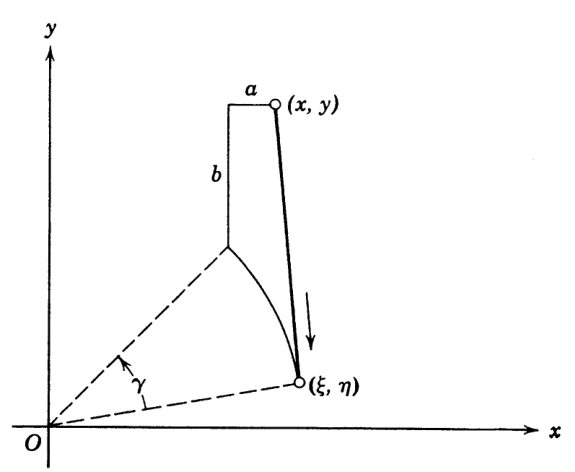
图 4.25 点 P 从位置 (x,y) 移到位置 (ξ,η) 联系 x , y x,y x , y ξ , η \xi,\eta ξ , η P P P ( x , y ) (x,y) ( x , y ) ( ξ , η ) (\xi,\eta) ( ξ , η )
*j. 狭义相对论中的匀速运动
第 234 页曾指出，三角函数与双曲函数之间有深刻的类比，几何上表现为椭圆与双曲线的性质彼此对应。等到 §7.7a 定义了虚宗量的三角函数，验证了 cos ( i t ) = cosh t , sin ( i t ) = i sinh t \cos(it)=\cosh t,\ \sin(it)=i\sinh t cos ( i t ) = cosh t , sin ( i t ) = i sinh t
由第 361 页的 (18a)，坐标轴绕原点旋转 γ \gamma γ P P P
ξ = x cos γ + y sin γ , η = − x sin γ + y cos γ . (18b)
\xi=x\cos\gamma+y\sin\gamma,\qquad \eta=-x\sin\gamma+y\cos\gamma.\tag{18b}
ξ = x cos γ + y sin γ , η = − x sin γ + y cos γ . ( 18b ) 点 P P P O P = x 2 + y 2 = ξ 2 + η 2 OP=\sqrt{x^2+y^2}=\sqrt{\xi^2+\eta^2} OP = x 2 + y 2 = ξ 2 + η 2 cos 2 γ + sin 2 γ = 1 \cos^2\gamma+\sin^2\gamma=1 cos 2 γ + sin 2 γ = 1
现在考察一个类似的变换，其系数用双曲函数表示：
ξ = x cosh α − t sinh α , τ = − x sinh α + t cosh α . (19)
\xi=x\cosh\alpha-t\sinh\alpha,\qquad \tau=-x\sinh\alpha+t\cosh\alpha.\tag{19}
ξ = x cosh α − t sinh α , τ = − x sinh α + t cosh α . ( 19 ) 在旋转公式 (18b) 中对转角以及 y , η y,\eta y , η γ = i α , y = i t , η = i τ \gamma=i\alpha,\ y=it,\ \eta=i\tau γ = i α , y = i t , η = i τ α \alpha α γ \gamma γ ξ , τ \xi,\tau ξ , τ x , t x,t x , t cosh 2 α − sinh 2 α = 1 \cosh^2\alpha-\sinh^2\alpha=1 cosh 2 α − sinh 2 α = 1
ξ 2 − τ 2 = ( x cosh α − t sinh α ) 2 − ( − x sinh α + t cosh α ) 2 = x 2 − t 2 .
\xi^2-\tau^2=(x\cosh\alpha-t\sinh\alpha)^2-(-x\sinh\alpha+t\cosh\alpha)^2=x^2-t^2.
ξ 2 − τ 2 = ( x cosh α − t sinh α ) 2 − ( − x sinh α + t cosh α ) 2 = x 2 − t 2 . 注意到 x 2 − t 2 = x 2 + y 2 x^2-t^2=x^2+y^2 x 2 − t 2 = x 2 + y 2 x , y x,y x , y
现在把 t t t x x x x , t x,t x , t O O O ξ , τ \xi,\tau ξ , τ
x 2 − t 2 = ξ 2 − τ 2 .
\sqrt{x^2-t^2}=\sqrt{\xi^2-\tau^2}.
x 2 − t 2 = ξ 2 − τ 2 .
译者注 两边根号内的量对所有事件都相等。若 x 2 − t 2 < 0 x^2-t^2<0 x 2 − t 2 < 0
第二个系中的观察者用 ξ \xi ξ ξ = 0 \xi=0 ξ = 0 x cosh α − t sinh α = 0 x\cosh\alpha-t\sinh\alpha=0 x cosh α − t sinh α = 0 x / t = tanh α x/t=\tanh\alpha x / t = tanh α v = d x / d t = tanh α v=dx/dt=\tanh\alpha v = d x / d t = tanh α v v v
v = sinh α cosh α = e α − e − α e α + e − α
v=\frac{\sinh\alpha}{\cosh\alpha}=\frac{e^\alpha-e^{-\alpha}}{e^\alpha+e^{-\alpha}}
v = cosh α sinh α = e α + e − α e α − e − α 必介于 − 1 -1 − 1 + 1 +1 + 1 1 1 1 1 1 1 c c c v v v
设 u u u x = u t x=ut x = u t t = 0 t=0 t = 0 x = 0 x=0 x = 0 u u u
w = d ξ d τ = d ξ / d t d τ / d t = u − tanh α 1 − u tanh α = u − v 1 − u v .
w=\frac{d\xi}{d\tau}=\frac{d\xi/dt}{d\tau/dt}
=\frac{u-\tanh\alpha}{1-u\tanh\alpha}=\frac{u-v}{1-uv}.
w = d τ d ξ = d τ / d t d ξ / d t = 1 − u tanh α u − tanh α = 1 − uv u − v . 爱因斯坦狭义相对论给出的这个结果与经典运动学不同。按后者，对以速度 v v v w = u − v w=u-v w = u − v u = + 1 u=+1 u = + 1 − 1 -1 − 1 w = u w=u w = u
k. 用积分表示闭曲线所围的面积
第二章借助“曲线下的面积”，即一种特殊条形区域的面积，引出了积分的概念。只看这种情形并不十分令人满意。实际最常遇到的是闭曲线 C C C ∫ a b f ( x ) d x \int_a^b f(x)\,dx ∫ a b f ( x ) d x
基本公式
设闭曲线 C C C C C C 有向面积 ：简单闭曲线沿顺时针方向时面积取负，沿逆时针方向时取正。
设简单有向闭曲线 C C C x = x ( t ) , y = y ( t ) x=x(t),\ y=y(t) x = x ( t ) , y = y ( t ) α ≤ t ≤ β \alpha\le t\le\beta α ≤ t ≤ β t t t C C C x , y x,y x , y t t t t = α , β t=\alpha,\beta t = α , β x ˙ , y ˙ \dot x,\dot y x ˙ , y ˙ C C C C C C A A A
A = − ∫ α β y x ˙ d t = ∫ α β x y ˙ d t = 1 2 ∫ α β ( x y ˙ − y x ˙ ) d t . (20)
A=-\int_\alpha^\beta y\dot x\,dt=\int_\alpha^\beta x\dot y\,dt
=\frac12\int_\alpha^\beta(x\dot y-y\dot x)\,dt.\tag{20}
A = − ∫ α β y x ˙ d t = ∫ α β x y ˙ d t = 2 1 ∫ α β ( x y ˙ − y x ˙ ) d t . ( 20 ) 三种写法等价：对第一个积分分部积分，利用周期条件 x ( α ) = x ( β ) , y ( α ) = y ( β ) x(\alpha)=x(\beta),\ y(\alpha)=y(\beta) x ( α ) = x ( β ) , y ( α ) = y ( β )
这些式子与坐标系在平面中的位置无关。从对称表达式 A = 1 2 ∫ α β ( x y ˙ − y x ˙ ) d t A=\frac12\int_\alpha^\beta(x\dot y-y\dot x)\,dt A = 2 1 ∫ α β ( x y ˙ − y x ˙ ) d t x y xy x y ξ η \xi\eta ξ η
x = ξ cos γ − η sin γ + a , y = ξ sin γ + η cos γ + b ,
x=\xi\cos\gamma-\eta\sin\gamma+a,\qquad y=\xi\sin\gamma+\eta\cos\gamma+b,
x = ξ cos γ − η sin γ + a , y = ξ sin γ + η cos γ + b , 其中 a , b , γ a,b,\gamma a , b , γ t t t x ˙ = ξ ˙ cos γ − η ˙ sin γ , y ˙ = ξ ˙ sin γ + η ˙ cos γ \dot x=\dot\xi\cos\gamma-\dot\eta\sin\gamma,\ \dot y=\dot\xi\sin\gamma+\dot\eta\cos\gamma x ˙ = ξ ˙ cos γ − η ˙ sin γ , y ˙ = ξ ˙ sin γ + η ˙ cos γ
x y ˙ − y x ˙ = ξ η ˙ − η ξ ˙ + a y ˙ − b x ˙ .
x\dot y-y\dot x=\xi\dot\eta-\eta\dot\xi+a\dot y-b\dot x.
x y ˙ − y x ˙ = ξ η ˙ − η ξ ˙ + a y ˙ − b x ˙ . 所以对绕原点的旋转（即 a = b = 0 a=b=0 a = b = 0 a a a b b b C C C
∫ α β ( a y ˙ − b x ˙ ) d t = ( a y − b x ) ∣ α β = 0 ,
\int_\alpha^\beta(a\dot y-b\dot x)\,dt=(ay-bx)\big|_\alpha^\beta=0,
∫ α β ( a y ˙ − b x ˙ ) d t = ( a y − b x ) α β = 0 , 面积积分的值也不受影响。
基本公式 (20) 的证明。简单弧上的线积分
证明分几步。先设 C C C P 0 P_0 P 0 P 1 P_1 P 1 x = x ( t ) , y = y ( t ) x=x(t),\ y=y(t) x = x ( t ) , y = y ( t ) P 0 , P 1 P_0,P_1 P 0 , P 1 t = t 0 , t 1 t=t_0,t_1 t = t 0 , t 1 t 0 t_0 t 0 t 1 t_1 t 1
A = − ∫ t 0 t 1 y d x d t d t
A=-\int_{t_0}^{t_1}y\frac{dx}{dt}\,dt
A = − ∫ t 0 t 1 y d t d x d t 只依赖于 C C C τ = χ ( t ) \tau=\chi(t) τ = χ ( t ) τ 0 = χ ( t 0 ) , τ 1 = χ ( t 1 ) \tau_0=\chi(t_0),\ \tau_1=\chi(t_1) τ 0 = χ ( t 0 ) , τ 1 = χ ( t 1 )
− ∫ τ 0 τ 1 y d x d τ d τ = − ∫ t 0 t 1 y d x d τ d τ d t d t = − ∫ t 0 t 1 y d x d t d t = A .
-\int_{\tau_0}^{\tau_1}y\frac{dx}{d\tau}\,d\tau
=-\int_{t_0}^{t_1}y\frac{dx}{d\tau}\frac{d\tau}{dt}\,dt
=-\int_{t_0}^{t_1}y\frac{dx}{dt}\,dt=A.
− ∫ τ 0 τ 1 y d τ d x d τ = − ∫ t 0 t 1 y d τ d x d t d τ d t = − ∫ t 0 t 1 y d t d x d t = A . 原注 1（第 366 页） 假设 x ( t ) , y ( t ) x(t),y(t) x ( t ) , y ( t ) τ ( t ) \tau(t) τ ( t )
故可以省略对特定参数 t t t A = A C = − ∫ C y d x A=A_C=-\int_C y\,dx A = A C = − ∫ C y d x A C A_C A C t t t d x = ( d x / d t ) d t dx=(dx/dt)\,dt d x = ( d x / d t ) d t
原注 1（第 367 页） ∫ C y d x \int_C y\,dx ∫ C y d x ∫ C p d x + q d y \int_C p\,dx+q\,dy ∫ C p d x + q d y
若 C ′ C' C ′ C C C P 1 P_1 P 1 P 0 P_0 P 0
A C ′ = − ∫ t 1 t 0 y d x d t d t = + ∫ t 0 t 1 y d x d t d t = − A C .
A_{C'}=-\int_{t_1}^{t_0}y\frac{dx}{dt}\,dt
=+\int_{t_0}^{t_1}y\frac{dx}{dt}\,dt=-A_C.
A C ′ = − ∫ t 1 t 0 y d t d x d t = + ∫ t 0 t 1 y d t d x d t = − A C . 可见将弧反向，会使积分 A C A_C A C
若把简单有向弧 C C C C 1 , C 2 , … , C n C_1,C_2,\ldots,C_n C 1 , C 2 , … , C n A C = A C 1 + A C 2 + ⋯ + A C n A_C=A_{C_1}+A_{C_2}+\cdots+A_{C_n} A C = A C 1 + A C 2 + ⋯ + A C n C C C t t t t 0 ≤ t ≤ t n t_0\le t\le t_n t 0 ≤ t ≤ t n t 0 ≤ t ≤ t 1 , … , t n − 1 ≤ t ≤ t n t_0\le t\le t_1,\ldots,t_{n-1}\le t\le t_n t 0 ≤ t ≤ t 1 , … , t n − 1 ≤ t ≤ t n
当 C C C C 1 , C 2 , … C_1,C_2,\ldots C 1 , C 2 , … A C i A_{C_i} A C i C C C
闭曲线的基本线积分
现在可以对任意简单有向闭曲线 C C C A C A_C A C C 1 , … , C n C_1,\ldots,C_n C 1 , … , C n A C i A_{C_i} A C i x = x ( t ) , y = y ( t ) x=x(t),\ y=y(t) x = x ( t ) , y = y ( t ) α ≤ t ≤ β \alpha\le t\le\beta α ≤ t ≤ β t t t C C C t = α , β t=\alpha,\beta t = α , β
A C = − ∫ α β y d x d t d t .
A_C=-\int_\alpha^\beta y\frac{dx}{dt}\,dt.
A C = − ∫ α β y d t d x d t . 对于非简单有向曲线 C C C A C A_C A C C C C
原注 1（第 368 页） 这样得到的 A C A_C A C
基本积分的面积意义
现在来证明主要的一点，即闭曲线的 A C A_C A C C C C G G G C 1 : y = g ( x ) C_1:y=g(x) C 1 : y = g ( x ) C 3 : y = f ( x ) C_3:y=f(x) C 3 : y = f ( x ) a ≤ x ≤ b a\le x\le b a ≤ x ≤ b C 2 : x = a , C 4 : x = b C_2:x=a,\ C_4:x=b C 2 : x = a , C 4 : x = b C 2 , C 4 C_2,C_4 C 2 , C 4
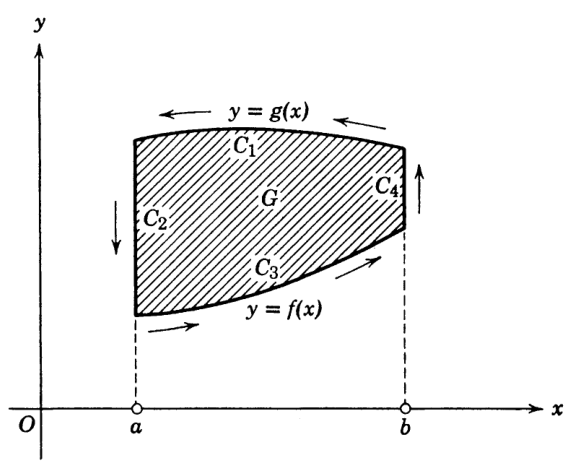
图 4.25a 一个“单元”的面积 让边界 C C C C 1 C_1 C 1 x x x C 3 C_3 C 3 x x x A C A_C A C C 2 , C 4 C_2,C_4 C 2 , C 4 x x x d x / d t = 0 dx/dt=0 d x / d t = 0 C 1 , C 3 C_1,C_3 C 1 , C 3 x x x
A C = A C 1 + A C 3 = − ∫ b a g ( x ) d x − ∫ a b f ( x ) d x = ∫ a b g ( x ) d x − ∫ a b f ( x ) d x .
A_C=A_{C_1}+A_{C_3}
=-\int_b^a g(x)\,dx-\int_a^b f(x)\,dx
=\int_a^b g(x)\,dx-\int_a^b f(x)\,dx .
A C = A C 1 + A C 3 = − ∫ b a g ( x ) d x − ∫ a b f ( x ) d x = ∫ a b g ( x ) d x − ∫ a b f ( x ) d x . 若 G G G x x x C 1 , C 3 C_1,C_3 C 1 , C 3 y + c y+c y + c y y y c c c y y y G G G A C = − ∫ C y d x A_C=-\int_C y\,dx A C = − ∫ C y d x y y y A C A_C A C x x x A C = ∫ C x d y A_C=\int_C x\,dy A C = ∫ C x d y x , y x,y x , y
再设区域 G G G C C C G 1 , … , G n G_1,\ldots,G_n G 1 , … , G n C 1 , … , C n C_1,\ldots,C_n C 1 , … , C n A C i = − ∫ C i y d x A_{C_i}=-\int_{C_i}y\,dx A C i = − ∫ C i y d x
A = ∑ i = 1 n A C i = ∑ i = 1 n ( − ∫ C i y d x ) = − ∫ C y d x = A C ,
A=\sum_{i=1}^n A_{C_i}=\sum_{i=1}^n\left(-\int_{C_i}y\,dx\right)
=-\int_C y\,dx=A_C,
A = i = 1 ∑ n A C i = i = 1 ∑ n ( − ∫ C i y d x ) = − ∫ C y d x = A C , 其中 A A A G G G
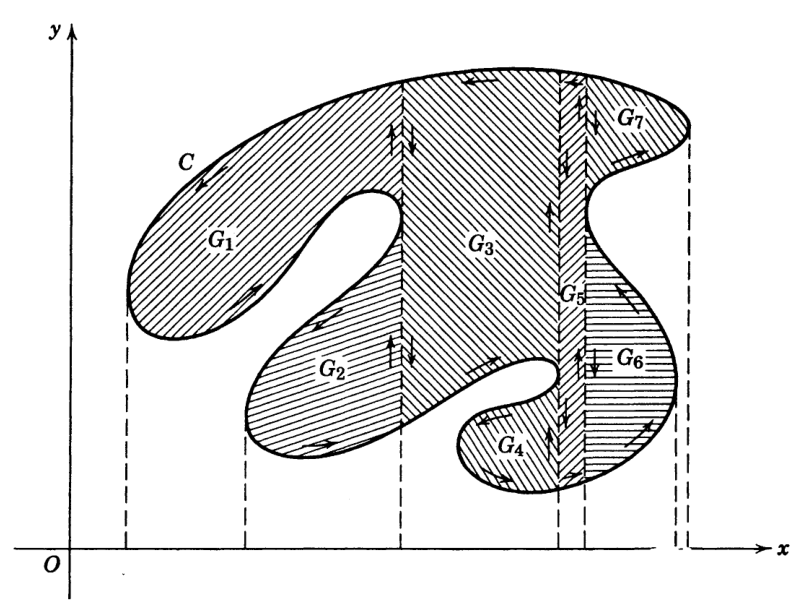
图 4.26 把有向区域分成有向单元 补充说明
同一证明也适用于能够分成有限个简单单元的多连通区域，如环形区域。此时各条边界曲线必须取一致的走向，使得沿着边界前进时，区域内部始终在左侧，或者始终在右侧。
即使 C C C C C C
例 求椭圆 x 2 / a 2 + y 2 / b 2 = 1 x^2/a^2+y^2/b^2=1 x 2 / a 2 + y 2 / b 2 = 1 x = a cos t , y = b sin t x=a\cos t,\ y=b\sin t x = a cos t , y = b sin t 0 ≤ t ≤ 2 π 0\le t\le2\pi 0 ≤ t ≤ 2 π
A = 1 2 ∫ 0 2 π ( x y ˙ − y x ˙ ) d t = 1 2 ∫ 0 2 π a b d t = π a b .
A=\frac12\int_0^{2\pi}(x\dot y-y\dot x)\,dt
=\frac12\int_0^{2\pi}ab\,dt=\pi ab.
A = 2 1 ∫ 0 2 π ( x y ˙ − y x ˙ ) d t = 2 1 ∫ 0 2 π ab d t = πab . 极坐标中的面积
用极坐标 r , θ r,\theta r , θ r = f ( θ ) r=f(\theta) r = f ( θ ) θ = α , θ = β \theta=\alpha,\theta=\beta θ = α , θ = β A A A α < β \alpha<\beta α < β θ \theta θ
A = 1 2 ∫ ( x d y − y d x ) = 1 2 ∫ ( x y ˙ − y x ˙ ) d t
A=\frac12\int(x\,dy-y\,dx)=\frac12\int(x\dot y-y\dot x)\,dt
A = 2 1 ∫ ( x d y − y d x ) = 2 1 ∫ ( x y ˙ − y x ˙ ) d t 沿曲边及两条半径积分。在半径 θ = α , β \theta=\alpha,\beta θ = α , β r r r x = r cos θ , y = r sin θ x=r\cos\theta,\ y=r\sin\theta x = r cos θ , y = r sin θ θ \theta θ x ˙ = cos θ , y ˙ = sin θ \dot x=\cos\theta,\ \dot y=\sin\theta x ˙ = cos θ , y ˙ = sin θ x y ˙ − y x ˙ = 0 x\dot y-y\dot x=0 x y ˙ − y x ˙ = 0 θ \theta θ
x ˙ = d r d θ cos θ − r sin θ , y ˙ = d r d θ sin θ + r cos θ ,
\dot x=\frac{dr}{d\theta}\cos\theta-r\sin\theta,\qquad
\dot y=\frac{dr}{d\theta}\sin\theta+r\cos\theta,
x ˙ = d θ d r cos θ − r sin θ , y ˙ = d θ d r sin θ + r cos θ , 从而 x y ˙ − y x ˙ = r 2 x\dot y-y\dot x=r^2 x y ˙ − y x ˙ = r 2
A = 1 2 ∫ α β r 2 d θ = 1 2 ∫ α β f 2 ( θ ) d θ . (21)
A=\frac12\int_\alpha^\beta r^2\,d\theta
=\frac12\int_\alpha^\beta f^2(\theta)\,d\theta.\tag{21}
A = 2 1 ∫ α β r 2 d θ = 2 1 ∫ α β f 2 ( θ ) d θ . ( 21 ) 若简单闭曲线 C C C C C C 0 ≤ θ ≤ 2 π 0\le\theta\le2\pi 0 ≤ θ ≤ 2 π θ \theta θ
A = 1 2 ∫ 0 2 π r 2 d θ . (22)
A=\frac12\int_0^{2\pi}r^2\,d\theta.\tag{22}
A = 2 1 ∫ 0 2 π r 2 d θ . ( 22 ) 极坐标面积公式 (21) 也可直接由积分定义导出。从原点引半径，把区域分为若干扇形（图 4.27），每一块可由 θ i − 1 < θ < θ i , 0 < r < f ( θ ) \theta_{i-1}<\theta<\theta_i,\ 0<r<f(\theta) θ i − 1 < θ < θ i , 0 < r < f ( θ ) 1 2 r 2 ( θ i − θ i − 1 ) \frac12r^2(\theta_i-\theta_{i-1}) 2 1 r 2 ( θ i − θ i − 1 ) r r r f ( θ ) f(\theta) f ( θ ) 1 2 ∫ α β r 2 d θ \frac12\int_\alpha^\beta r^2\,d\theta 2 1 ∫ α β r 2 d θ
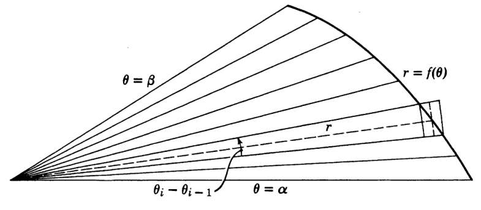
图 4.27 极坐标中的面积 双纽线的面积
作为 (21) 的例子，求双纽线的一瓣所围的面积。它的方程为 r 2 = 2 a 2 cos 2 θ r^2=2a^2\cos2\theta r 2 = 2 a 2 cos 2 θ θ \theta θ − π / 4 -\pi/4 − π /4 + π / 4 +\pi/4 + π /4
A = a 2 ∫ − π / 4 + π / 4 cos 2 θ d θ = a 2 2 sin 2 θ ∣ − π / 4 + π / 4 = a 2 .
A=a^2\int_{-\pi/4}^{+\pi/4}\cos2\theta\,d\theta
=\frac{a^2}{2}\sin2\theta\big|_{-\pi/4}^{+\pi/4}=a^2.
A = a 2 ∫ − π /4 + π /4 cos 2 θ d θ = 2 a 2 sin 2 θ − π /4 + π /4 = a 2 . 另一瓣的有向面积绝对值相同，符号相反。
双曲线围成的面积
第 234 页曾用一个颇为繁复的方法求出双曲线 x 2 − y 2 = 1 x^2-y^2=1 x 2 − y 2 = 1 x = cosh t , y = sinh t x=\cosh t,\ y=\sinh t x = cosh t , y = sinh t 0 , t 0,t 0 , t
2 A = ∫ 0 t ( x y ˙ − y x ˙ ) d τ = ∫ 0 t ( cosh 2 τ − sinh 2 τ ) d τ = ∫ 0 t d τ = t .
2A=\int_0^t(x\dot y-y\dot x)\,d\tau
=\int_0^t(\cosh^2\tau-\sinh^2\tau)\,d\tau
=\int_0^t d\tau=t.
2 A = ∫ 0 t ( x y ˙ − y x ˙ ) d τ = ∫ 0 t ( cosh 2 τ − sinh 2 τ ) d τ = ∫ 0 t d τ = t . 两条半径对积分仍没有贡献。
l. 曲线的质心与矩
再来看力学中的几个概念。设平面内有 n n n m 1 , m 2 , … , m n m_1,m_2,\ldots,m_n m 1 , m 2 , … , m n y 1 , y 2 , … , y n y_1,y_2,\ldots,y_n y 1 , y 2 , … , y n
T = ∑ i = 1 n m i y i = m 1 y 1 + m 2 y 2 + ⋯ + m n y n
T=\sum_{i=1}^n m_i y_i=m_1y_1+m_2y_2+\cdots+m_ny_n
T = i = 1 ∑ n m i y i = m 1 y 1 + m 2 y 2 + ⋯ + m n y n 为这组质点对 x x x 矩 。记总质量 M = m 1 + m 2 + ⋯ + m n M=m_1+m_2+\cdots+m_n M = m 1 + m 2 + ⋯ + m n η = T / M \eta=T/M η = T / M 质心 距 x x x m 1 , … , m n m_1,\ldots,m_n m 1 , … , m n y 1 , … , y n y_1,\ldots,y_n y 1 , … , y n η \eta η y y y
很容易把矩的定义推广到质量沿一条曲线均匀分布的情形，并从而定义曲线质心的坐标 ξ , η \xi,\eta ξ , η μ \mu μ
按力学中典型的方法，先从有限个质点出发，再令质点数 n → ∞ n\to\infty n → ∞ s s s n − 1 n-1 n − 1 Δ s 1 , … , Δ s n \Delta s_1,\ldots,\Delta s_n Δ s 1 , … , Δ s n μ Δ s i \mu\Delta s_i μ Δ s i y i y_i y i x x x ∑ i = 1 n μ y i Δ s i \sum_{i=1}^n\mu y_i\Delta s_i ∑ i = 1 n μ y i Δ s i Δ s i \Delta s_i Δ s i
T = μ ∫ s 0 s 1 y d s = μ ∫ x 0 x 1 y 1 + y ′ 2 d x . (23)
T=\mu\int_{s_0}^{s_1}y\,ds=\mu\int_{x_0}^{x_1}y\sqrt{1+y'^2}\,dx.\tag{23}
T = μ ∫ s 0 s 1 y d s = μ ∫ x 0 x 1 y 1 + y ′2 d x . ( 23 ) 因此很自然地用它来定义曲线对 x x x μ \mu μ μ ∫ s 0 s 1 d s = μ ( s 1 − s 0 ) \mu\int_{s_0}^{s_1}ds=\mu(s_1-s_0) μ ∫ s 0 s 1 d s = μ ( s 1 − s 0 )
ξ = ∫ s 0 s 1 x d s s 1 − s 0 , η = ∫ s 0 s 1 y d s s 1 − s 0 . (24)
\xi=\frac{\int_{s_0}^{s_1}x\,ds}{s_1-s_0},\qquad
\eta=\frac{\int_{s_0}^{s_1}y\,ds}{s_1-s_0}.\tag{24}
ξ = s 1 − s 0 ∫ s 0 s 1 x d s , η = s 1 − s 0 ∫ s 0 s 1 y d s . ( 24 ) 这些说法其实是曲线的矩和质心的定义。它们是有限质点情形的直接推广，因而我们自然会期待，力学中关于质点系质心或矩的结论，也适用于质量沿曲线连续分布的情形。事实确是如此。
m. 旋转面的面积和所围体积
古尔丁法则
曲线 y = f ( x ) y=f(x) y = f ( x ) f ( x ) ≥ 0 f(x)\ge0 f ( x ) ≥ 0 x x x 旋转面 。设横坐标介于 x 0 x_0 x 0 x 1 > x 0 x_1>x_0 x 1 > x 0
A = 2 π ∫ s 0 s 1 y d s = 2 π ∫ x 0 x 1 y 1 + y ′ 2 d x = 2 π η ( s 1 − s 0 ) . (25)
A=2\pi\int_{s_0}^{s_1}y\,ds
=2\pi\int_{x_0}^{x_1}y\sqrt{1+y'^2}\,dx
=2\pi\eta(s_1-s_0).\tag{25}
A = 2 π ∫ s 0 s 1 y d s = 2 π ∫ x 0 x 1 y 1 + y ′2 d x = 2 π η ( s 1 − s 0 ) . ( 25 ) 用文字说，旋转面的面积等于生成曲线的长乘以该曲线质心走过的路程 （古尔丁法则）。
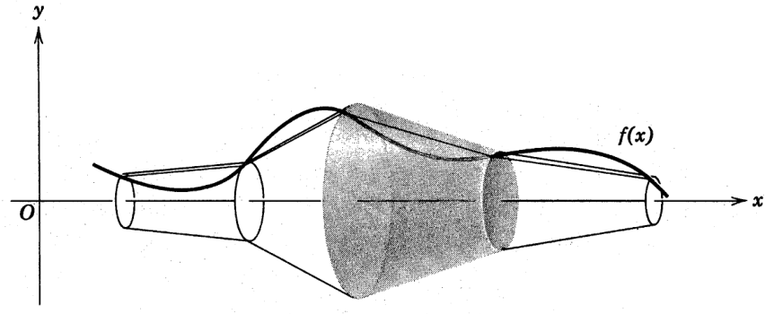
图 4.28 旋转面的面积 同样，旋转面与两端平面 x = x 0 x=x_0 x = x 0 x = x 1 > x 0 x=x_1>x_0 x = x 1 > x 0
V = π ∫ x 0 x 1 y 2 d x . (26)
V=\pi\int_{x_0}^{x_1}y^2\,dx.\tag{26}
V = π ∫ x 0 x 1 y 2 d x . ( 26 ) 推导这条公式也从直观出发，把所求体积看成前面那些圆台所组成物体的体积的极限。证明的其余步骤留给读者。
n. 转动惯量
研究物体的转动时，有一类称为转动惯量 的量起着重要作用。这里简述如下。设质量为 m m m ω \omega ω ω \omega ω y y y x x x 1 2 m y 2 ω 2 \frac12 m y^2\omega^2 2 1 m y 2 ω 2 1 2 ω 2 \frac12\omega^2 2 1 ω 2 m y 2 my^2 m y 2 x x x
类似地，若 n n n m 1 , … , m n m_1,\ldots,m_n m 1 , … , m n y 1 , … , y n y_1,\ldots,y_n y 1 , … , y n T = ∑ i m i y i 2 T=\sum_i m_i y_i^2 T = ∑ i m i y i 2 x x x
设任一曲线 y = f ( x ) y=f(x) y = f ( x ) x 0 x_0 x 0 x 1 > x 0 x_1>x_0 x 1 > x 0 x x x
T x = ∫ s 0 s 1 y 2 d s = ∫ x 0 x 1 y 2 1 + y ′ 2 d x . (27)
T_x=\int_{s_0}^{s_1}y^2\,ds=\int_{x_0}^{x_1}y^2\sqrt{1+y'^2}\,dx.\tag{27}
T x = ∫ s 0 s 1 y 2 d s = ∫ x 0 x 1 y 2 1 + y ′2 d x . ( 27 ) 相应地，对 y y y
T y = ∫ s 0 s 1 x 2 d s = ∫ x 0 x 1 x 2 1 + y ′ 2 d x . (28)
T_y=\int_{s_0}^{s_1}x^2\,ds=\int_{x_0}^{x_1}x^2\sqrt{1+y'^2}\,dx.\tag{28}
T y = ∫ s 0 s 1 x 2 d s = ∫ x 0 x 1 x 2 1 + y ′2 d x . ( 28 )